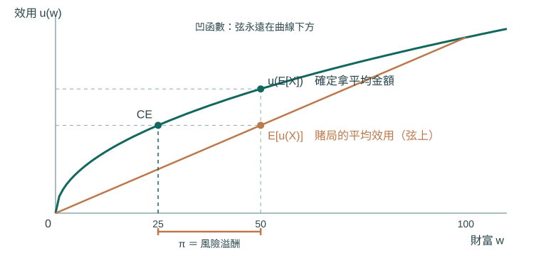
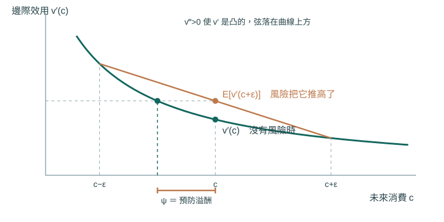
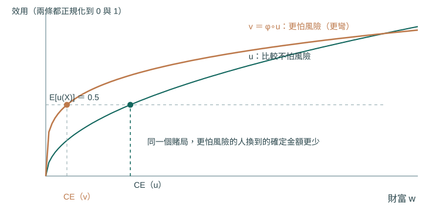
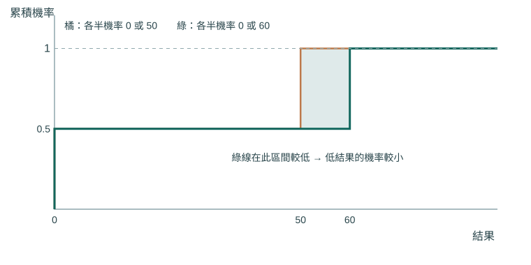
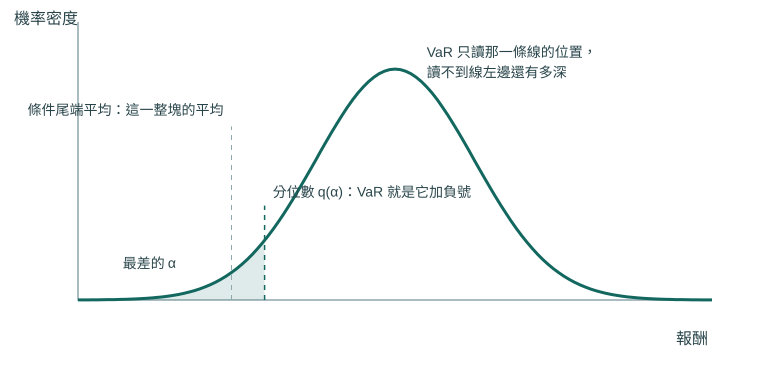
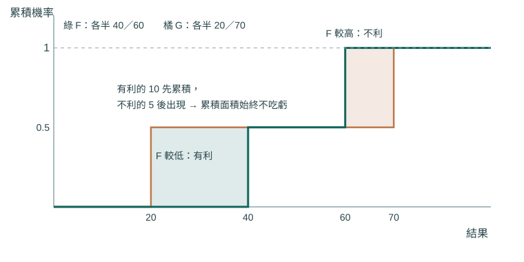
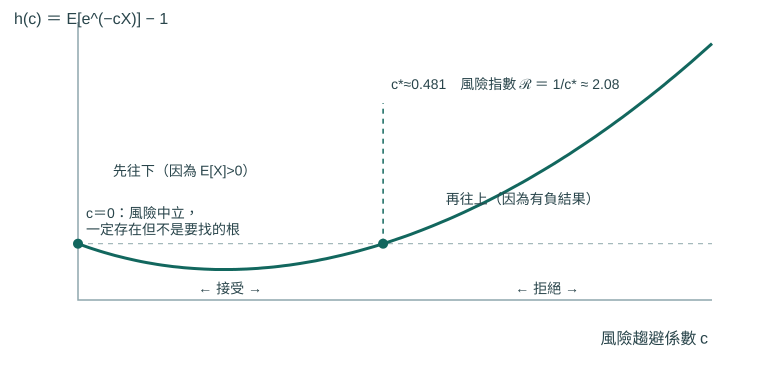
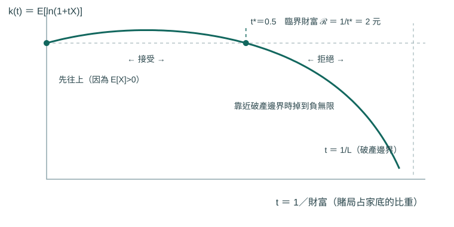
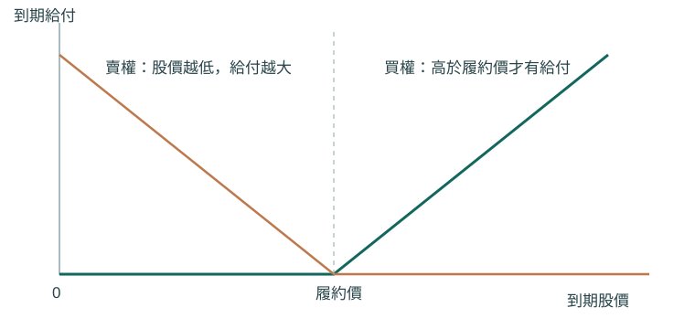

風險管理 / 整合筆記
01｜報酬的三種定義，以及它們各自的用處
為什麼同一件事要有三個定義
「這檔股票賺了多少」聽起來只有一個答案，實際上有三種寫法，而且它們的用處不同。先把符號固定下來：期初價格 $P_{t-1}$、期末價格 $P_t$，暫時忽略股利。
\[G_t=\frac{P_t}{P_{t-1}},\qquad R_t=G_t-1,\qquad r_t=\ln G_t=\ln(1+R_t).\]
毛報酬（gross return）$G_t$ 是「期末剩下原本的幾倍」，包含本金在內。淨報酬率（net return）$R_t$ 只算新增的那一部分。對數報酬率（log return，又稱連續複利報酬）$r_t$ 是毛報酬取自然對數。
三者的取值範圍不同，這是後面會用到的性質。價格為正時 $G_t>0$；$R_t$ 的下限是 $-1$（也就是賠掉全部本金，$-100\%$），上方沒有限制；$r_t$ 則可以是任何實數，價格趨近零時 $r_t\to-\infty$。
這個範圍差異有實際後果。後面幾節的風險指數要求「有可能虧損」，指的是淨報酬或損益有負值的機率為正。毛報酬永遠是正數，不能直接拿去套那些定義。筆記上另外提醒卡方分配與 F 分配也只取非負值：套公式之前先確認變數的取值範圍。
如果要把股利算進來，單期持有報酬的分子要改成 $P_t+D_t$，其中 $D_t$ 是期間收到的股利。兩組數字能不能直接比，先看它們有沒有含股利、有沒有含本金。
為什麼對數報酬可以相加
跨多期時，毛報酬是相乘的：
\[\frac{P_T}{P_0}=\frac{P_1}{P_0}\cdot\frac{P_2}{P_1}\cdots\frac{P_T}{P_{T-1}}=\prod_{t=1}^{T}(1+R_t),\]
因為中間的價格上下抵銷掉了。對數把乘法變成加法，所以兩邊取對數：
\[\ln\frac{P_T}{P_0}=\sum_{t=1}^{T}\ln(1+R_t)=\sum_{t=1}^{T}r_t.\]
這就是對數報酬在統計上好用的原因：多期報酬是單期報酬的和，而和的分配比積的分配好處理得多——期望值、變異數（variance）都有現成的加法公式，中央極限定理也是對和講的。
無風險利率與超額報酬
超額報酬（excess return）是同一段期間內，資產的淨報酬減去無風險資產的淨報酬。重點是「同一段期間」。
筆記以郵局三個月定存當無風險利率。要注意牌告的數字通常是年率，不能直接拿來減三個月的報酬。若有效年率（effective annual rate）為 $i_a$，三個月的有效利率是
\[(1+i_a)^{1/4}-1,\]
因為一年四期複利後要回到 $1+i_a$：$\big[(1+i_a)^{1/4}\big]^4=1+i_a$。若銀行採單利報價，就依契約天數與計息基礎（例如 365 天或 360 天）換算，不能套上面這條。
為什麼年化波動常常是週波動乘上 √52
這是實務上最常見的換算，但它需要前提，而前提常被忽略。
從對數報酬可加這件事出發。一年的對數報酬是 52 週對數報酬的和，所以要算年報酬的變異數，就是算和的變異數。一般情況下，
\[\operatorname{Var}\!\left(\sum_{t=1}^{52}r_t\right)=\sum_{t=1}^{52}\operatorname{Var}(r_t)+2\sum_{s<t}\operatorname{Cov}(r_s,r_t).\]
第二項是所有成對的共變異數（covariance），衡量不同週的報酬是否連動。如果各週報酬同分配、變異數 $\sigma_w^2$ 有限，而且彼此不相關（共變異數全為零），第二項整個消失：
\[\operatorname{Var}\!\left(\sum_{t=1}^{52}r_t\right)=52\sigma_w^2\quad\Longrightarrow\quad \sigma_a=\sqrt{52}\,\sigma_w.\]
平方根是這樣來的：變異數相加，標準差（standard deviation）才開根號。
前提不成立時就會偏掉。報酬有正的序列相關（上漲後傾向繼續上漲）時，共變異數為正，實際年波動會大於 $\sqrt{52}\,\sigma_w$；有均值回歸時則相反。另外，這條規則是對對數報酬成立的；淨報酬因為跨期相乘而不是相加，平方根法則只是近似。
風險管理 / 整合筆記
02｜三個風險指標，回答的是三個不同的問題
先分清楚「風險」與「怕風險」
這兩件事常被混在一起，但它們是不同層次的東西。風險衡量描述的是投資結果的分配長什麼樣子，是客觀的；風險偏好描述的是某個決策者怎麼評價這個分配，是主觀的。
筆記用溫度打比方：同一個房間的溫度計讀數對所有人都一樣，但怕冷的人和怕熱的人會做不同的事。同一個分配可以給所有人相同的風險指標，不同的人仍然可以做不同的選擇。
本節講的全部是第一件事，第 03 節開始才處理第二件事。
期望值與變異數
設結果 $x_i$ 以機率 $p_i$ 發生，且 $\sum_i p_i=1$、$p_i\ge0$。期望值（expectation）是依機率加權的平均：
\[\mu=E[X]=\sum_{i=1}^n p_ix_i.\]
變異數（variance）衡量結果離平均有多遠：
\[\sigma^2=\operatorname{Var}(X)=\sum_{i=1}^n p_i(x_i-\mu)^2,\]
標準差（standard deviation）$\sigma$ 是它的平方根。
為什麼要平方？因為如果直接用 $\sum p_i(x_i-\mu)$，高於平均與低於平均的偏離會互相抵銷，答案恆等於零，量不到任何東西。平方讓兩邊的偏離都變成正的貢獻。副作用是變異數的單位是「結果的單位平方」，所以開根號回到原單位，才有標準差。
這個作法有一個常被忽略的後果：變異數同時把「比平均好」與「比平均差」算進來。把加總拆成兩邊就看得很清楚：
\[\sigma^2=\sum_{x_i<\mu}p_i(x_i-\mu)^2+\sum_{x_i\ge\mu}p_i(x_i-\mu)^2.\]
所以標準差衡量的是波動，它並不把「賺很多」單獨當成好事。一個報酬特別高的機會，和一個虧損特別大的機會，對標準差的貢獻方向相同。第 19 節的風險指數就是為了處理這個缺點而設計的。
另外提醒一件事：報酬率寫成小數（$0.05$）或百分點（$5$）會讓變異數差 $10{,}000$ 倍，比較不同來源的數字之前要先確認尺度。
三個指標並排
令 $X\sim N(\mu,\sigma^2)$、$\mu>0$，三個量可以並排比較：
| 指標 | 公式 | 它回答的問題 |
|---|
| 標準差 | $\sigma$ | 結果距離平均值有多分散 |
| 常態下的損失門檻 | $z_{1-\alpha}\sigma-\mu$ | 在指定的機率水準下，損失大概到哪裡 |
| Aumann–Serrano 風險指數 | $\dfrac{\sigma^2}{2\mu}$ | 要多能承受風險的人，才剛好肯接受它 |
$z_{1-\alpha}$ 是標準常態分配的分位數（quantile），意思是「標準常態落在它以下的機率恰為 $1-\alpha$ 的那個點」。常被記成 $1.96$ 的那個數字對應的是單側 $2.5\%$，不是單側 $5\%$；單側 $5\%$ 約為 $1.645$。第二列會在第 13 節展開，第三列在第 19、20 節推導，而且 $\frac{\sigma^2}{2\mu}$ 只有在常態分配下才是該指數的精確值。
每個結果都多給一筆錢，三個指標各自怎麼變
這是一個很好的測試，因為三個指標的答案完全不同。設 $c>0$，把 $X$ 換成 $X+c$。
標準差不變。 平均跟著平移成 $\mu+c$，所以每個結果到平均的距離 $(x_i+c)-(\mu+c)=x_i-\mu$ 一點都沒變：
\[\operatorname{Var}(X+c)=\sum_i p_i\big[(x_i+c)-(\mu+c)\big]^2=\sum_i p_i(x_i-\mu)^2=\operatorname{Var}(X).\]
損失門檻下降 $c$。 常態平移後仍是常態，$X+c\sim N(\mu+c,\sigma^2)$，所以門檻變成 $z_{1-\alpha}\sigma-(\mu+c)$，整整少了 $c$。
風險指數下降。 $\frac{\sigma^2}{2(\mu+c)}<\frac{\sigma^2}{2\mu}$，因為分母變大而分子不變。
三個答案不一致，不是誰算錯，而是它們本來就在問不同的問題。保證多拿一筆錢確實不會讓結果變得比較不分散，但它確實改善了承擔這筆風險的條件。選指標之前要先確定自己問的是哪一個問題。
附帶一則：存續期間
筆記上另記了一句「存續期間（duration）最長是存續年限」。對現金流全為非負的固定收益債券，麥考利存續期間（Macaulay duration）是以各期現值為權重的收款時間加權平均：
\[D=\frac{\sum_t t\cdot \frac{CF_t}{(1+y)^t}}{\sum_t \frac{CF_t}{(1+y)^t}}.\]
既然是對各個收款時點取加權平均，而權重非負且加總為一，結果一定落在最早與最晚付款時點之間，所以不會超過到期年限。零息債券只有一筆現金流，加權平均就等於到期年限。若債券含選擇權、有負的現金流，或用的是別種存續期間定義，上面的論證就不適用，要重新確認條件。
風險管理 / 整合筆記
03｜期望效用與 Jensen 不等式
為什麼不能直接比期望值
筆記確定拿 50 元，或各半機率拿 100 元與 0 元。兩者的期望值都是 50 元，但多數人會選確定的那一個。
如果決策就是比期望值，這兩個方案應該無差異（indifferent，兩個方案評價相同），顯然不符合實際。
期望效用（expected utility）理論的作法是：不要直接對金額加權，先把每個金額換算成「對這個人的價值」，再加權。效用函數（utility function）$u(w)$ 就是這個換算表，而期望效用（expected utility）是換算後再依機率加權的結果。上面兩個方案分別是
\[u(50),\qquad \tfrac12u(100)+\tfrac12u(0).\]
效用函數的兩個常用假設各有明確的意思。$u'(w)>0$ 表示財富越多越好。$u''(w)<0$ 表示邊際效用遞減：第一萬元帶來的價值，比第一元帶來的少。注意這說的是邊際效用的斜率為負，不是邊際效用本身為負——$u'$ 仍然是正的。
凹函數為什麼一定偏好確定的平均值
$u''<0$ 的幾何意義是函數凹（concave），也就是任何兩點之間的連線（弦）都落在曲線下方。
這正好對上我們要比較的兩個量。隨機方案的期望效用 $\frac12u(100)+\frac12u(0)$ 是兩個端點效用的加權平均，落在弦上；確定拿平均金額的效用 $u(50)$ 落在曲線上。弦在下、曲線在上，所以確定的那個比較好。
一般的陳述就是 Jensen 不等式（Jensen's inequality）：對凹函數 $u$ 與任何隨機變數 $X$，
\[E[u(X)]\le u(E[X]).\]
用切線證明它
弦與曲線的說法只處理兩個結果的情況。一般情況用切線比較乾淨，而且只需要凹函數的一個性質：凹函數的任一條切線都落在整條曲線上方。
令平均財富 $m=E[X]$，在 $m$ 這一點作切線。切線上方性質說，對每一個可能的結果 $x$ 都有
\[u(x)\le u(m)+u'(m)(x-m).\]
右邊在做的事是：假裝每一元都一直維持它在平均財富處的邊際價值 $u'(m)$。對凹函數來說這會高估——往上偏離時每一元其實沒那麼值錢，往下偏離時每一元其實更值錢，兩邊都讓直線高於曲線。
兩邊取期望。$u(m)$ 與 $u'(m)$ 是固定的數，可以移到期望符號外面：
\[E[u(X)]\le u(m)+u'(m)\big(E[X]-m\big)=u(m),\]
因為 $E[X]-m=0$。一階項整個消失，剩下的就是曲率造成的損失。
這個證明只需要期望值存在，不要求分配是常態，也不要求結果只有兩種。如果 $u$ 嚴格凹而且 $X$ 不是常數，至少有一部分結果會嚴格落在切線下方，取期望後不等式就是嚴格的。
在期望效用的架構裡，這個結果就是「凹效用對應風險趨避」的來源。反過來，線性效用（$u''=0$）讓兩案無差異（indifferent，也就是兩個方案的期望效用相等），稱為風險中立；凸效用（$u''>0$）則偏好同樣平均值下的風險。
把差距換算成錢
Jensen 不等式告訴我們「確定的比較好」，但沒說好多少。要量化，先定義確定等值（certainty equivalent）$CE$：讓這個人覺得與賭局無差異的那筆確定金額，
\[u(CE)=E[u(X)].\]
因為 $u$ 嚴格遞增，它有唯一的反函數，所以 $CE=u^{-1}\big(E[u(X)]\big)$ 存在而且唯一。
把 Jensen 不等式 $E[u(X)]\le u(E[X])$ 的兩邊同時套上遞增函數 $u^{-1}$（遞增函數不改變大小關係）：
\[CE=u^{-1}\big(E[u(X)]\big)\le u^{-1}\big(u(E[X])\big)=E[X].\]
確定等值不超過期望值，兩者的差
\[\pi=E[X]-CE\ \ge\ 0\]
就是風險溢酬（risk premium）：為了把賭局換成確定的錢，他願意少拿的金額。

依原稿概念以向量圖重繪；示意圖，非實證資料。
圖上用 $u(w)=\sqrt w$、各半機率拿 0 或 100 元。平均是 50 元，曲線上的 $u(50)\approx7.07$ 高於弦上的 $E[u(X)]=5$；把 5 這個高度水平拉回曲線，落點是 $CE=25$，所以 $\pi=50-25=25$ 元。四個量在同一張圖上各自的位置值得記住。
這個量目前只有定義，還沒有公式。下一節要回答的正是：當風險很小時，$\pi$ 怎麼由 $u$ 的導數算出來？
兩個容易弄錯的地方
寫這個例子時容易把高報酬那一項誤寫成 $u(50)$，依賭局設定應為 $u(100)$。
另外，上面所有結論都建立在「先換算成效用再加權」這個架構上。它本身是一組關於偏好的假設（完備性、遞移性、連續性與獨立性），不是推導出來的事實。
風險管理 / 整合筆記
04｜風險趨避的度量：為什麼是 −u″/u′
先看一個會讓直覺出錯的例子
上一節得到「凹效用對應風險趨避」。凹的意思是 $u''<0$，所以很自然會想：$u''$ 越負，是不是就越怕風險？
這個想法是錯的。Pratt（1964）第 4 節舉的反例是 $u(w)=-e^{-w}$，它的導數是
\[u'(w)=e^{-w},\qquad u''(w)=-e^{-w}.\]
財富 $w$ 越大，$u''(w)$ 越接近零，曲線畫出來越來越像一條水平直線，看起來越來越「不凹」。但這個人的行為完全沒有改變。把財富整個平移 $k$：
\[u(k+w)=-e^{-k}e^{-w}=e^{-k}\,u(w),\]
效用只差一個正的倍數。而期望效用的排序對「同乘一個正數」是不變的：比較 $E[u(\cdot)]$ 誰大誰小時，兩邊同乘 $e^{-k}$ 不影響結果。所以不論他現在有多少錢，面對同一個賭局的取捨一模一樣。$u''$ 從 $-1$ 掉到接近 $0$，行為卻一動也沒動。
同樣的毛病還有一個更簡單的版本。$u$ 與 $v=a+bu$（$b>0$）描述完全相同的偏好，因為 $E[v(X)]=a+b\,E[u(X)]$ 與 $E[u(X)]$ 的排序一致。但 $v''=bu''$：只要換一個效用的計分單位，$u''$ 就整個被乘上 $b$。
所以 $u''$ 的大小沒有意義，只有它的正負號有意義（負號代表不願意接受公平賭局）。要比較「怕的程度」，必須找一個不受這兩種變動影響的量。
用「願意付多少錢」把怕的程度定義出來
與其猜哪個公式好，不如先把我們真正想量的東西定義清楚：為了擺脫一個風險，這個人願意放棄多少錢。
設財富為確定的 $w$，面對隨機擾動 $\tilde Z$。（risk premium）$\pi$ 定義為使下式成立的金額（Pratt 1964 式 (1)）：
\[u\big(w+E[\tilde Z]-\pi\big)=E\big[u(w+\tilde Z)\big].\]
左邊是把賭局換成一筆確定的錢：先拿到賭局的平均值 $E[\tilde Z]$，再扣掉 $\pi$。右邊是真的去賭的期望效用。兩邊相等，表示他對「去賭」與「拿平均值再少拿 $\pi$」無差異。$\pi$ 越大，代表他越願意為了避開這個風險而付錢，也就越怕風險。
這個定義有兩個好處。第一，$\pi$ 的單位是錢，與效用的計分單位無關：把 $u$ 換成 $a+bu$，上式左右兩邊同時變換，解出來的 $\pi$ 完全相同。第二，它是對整個賭局定義的，不必先假設風險很小。
平均值可以先併進財富裡。令 $\varepsilon=\tilde Z-E[\tilde Z]$，則 $E[\varepsilon]=0$，上式變成
\[u(w'-\pi)=E[u(w'+\varepsilon)],\qquad w'=w+E[\tilde Z].\]
所以討論 $\pi$ 時，只要處理平均為零的擾動就夠（Pratt 式 (2)）。以下令 $E[\varepsilon]=0$、$\operatorname{Var}(\varepsilon)=\sigma^2$，並把 $w'$ 仍寫成 $w$。
把 π 算出來
現在要把 $\pi$ 用 $u$ 的導數表示，兩邊都在 $w$ 附近做泰勒展開。
泰勒展開在這裡能用，是因為我們打算只處理很小的風險。把風險寫成 $\varepsilon=tZ$，其中 $E[Z]=0$、$E[Z^2]=\sigma_Z^2$ 固定，$t>0$ 控制風險的大小，然後看 $t\to0$ 時會發生什麼事。
右邊先不取期望，逐項展開到二階：
\[u(w+tZ)=u(w)+tZ\,u'(w)+\tfrac12t^2Z^2\,u''(w)+\text{餘項}.\]
再取期望。期望是線性的，可以逐項處理：$E[tZ]=t\,E[Z]=0$ 讓一階項整個消失，$E[t^2Z^2]=t^2\sigma_Z^2$：
\[E[u(w+tZ)]=u(w)+\tfrac12t^2\sigma_Z^2\,u''(w)+o(t^2).\]
記號 $o(t^2)$ 指「除以 $t^2$ 之後會趨近零」的部分。餘項要能這樣丟掉，需要 $u$ 的三階導數連續有界，且 $E|Z|^3$ 有限。Pratt 的原文假設寫成「$\tilde Z$ 的三階絕對中央動差（third absolute central moment，即 $E|Z-E Z|^3$）比 $\sigma^2$ 低階」，意思就是當風險縮小時，三階的那一項要比 $\sigma^2$ 更快趨近零，才可以丟掉。
一階項消失是整段推導的轉折點。 公平賭局平均不賺不賠，所以一次效果剛好抵銷，效用的損失要到二次項才出現。既然損失從 $t^2$ 開始，與它等值的確定損失 $\pi$ 也必然是 $t^2$ 的量級。
左邊只展開到一階：
\[u(w-\pi)=u(w)-\pi\,u'(w)+O(\pi^2).\]
這裡最常被問的是：為什麼右邊展到二階、左邊只展到一階，不是不對稱嗎？答案就在上一段。$\pi$ 本身是 $t^2$ 的量級，所以 $\pi^2$ 是 $t^4$ 的量級；我們只保留到 $t^2$，$t^4$ 的東西本來就該丟。兩邊不是用同樣的「階數」對齊，而是用同樣的精度對齊。
把兩邊設相等，消去共同的 $u(w)$：
\[-\pi\,u'(w)=\tfrac12t^2\sigma_Z^2\,u''(w)+o(t^2).\]
除以 $u'(w)$（它是正的，所以方向不變），並把 $t^2\sigma_Z^2$ 寫回 $\sigma^2$：
\[\pi\approx\frac12\left(-\frac{u''(w)}{u'(w)}\right)\sigma^2.\]
這個結果為什麼就是答案
右邊剛好拆成兩個互不相干的部分：$\sigma^2$ 只跟風險有關，不涉及這個人是誰；括號裡的量只跟這個人有關，不涉及是什麼風險。所以把括號裡的東西取名為
\[A(w)=-\frac{u''(w)}{u'(w)}\]
是被推導逼出來的，不是硬湊的。這就是 Pratt 式 (6) 的 $r(x)$，中文稱絕對風險趨避係數（absolute risk aversion）。Pratt 自己的讀法是：$r(x)$ 等於無窮小風險下，每單位變異數的風險溢酬的兩倍（把 $\pi\approx\frac12 r\sigma^2$ 反解成 $r\approx 2\pi/\sigma^2$ 就是這句話）。
回頭檢查開頭的反例。對 $u(w)=-e^{-cw}$（$c>0$）：
\[u'(w)=ce^{-cw},\qquad u''(w)=-c^2e^{-cw},\qquad A(w)=\frac{c^2e^{-cw}}{ce^{-cw}}=c.\]
指數項上下抵銷，$A$ 恆等於 $c$，與財富無關，正好對應「這個人的行為不隨財富改變」。這類效用因此稱為 CARA（constant absolute risk aversion）。$u''=-c^2e^{-cw}$ 確實隨 $w$ 趨近零，可見問題出在 $u''$ 這個指標，不出在這個人身上。
另一個等價寫法也值得記住。由對數微分，
\[A(w)=-\frac{u''(w)}{u'(w)}=-\frac{d}{dw}\ln u'(w).\]
$A(w)$ 就是邊際效用下降的百分比速度。邊際效用掉得越快，同樣一元的得與失越不對稱，這個人越不想承擔波動。取對數之所以能消掉比例因子，是因為 $\ln(bu')=\ln b+\ln u'$，常數微分之後就不見了。
風險如果是財富的比例
前面的 $\varepsilon$ 是固定金額的擾動。但很多風險是按比例發生的：投資報酬、通膨、匯率都是乘在財富上。這時該問的是「願意放棄財富的百分之幾」。
設 $E[u(w(1+\varepsilon))]=u(w(1-\theta))$，其中 $E[\varepsilon]=0$、$\operatorname{Var}(\varepsilon)=\sigma_\varepsilon^2$。財富的實際擾動是 $w\varepsilon$，變異數為 $w^2\sigma_\varepsilon^2$；確定損失是 $w\theta$。直接代進剛才的結果：
\[w\theta\approx\frac12A(w)\,w^2\sigma_\varepsilon^2.\]
兩邊除以 $w$：
\[\theta\approx\frac12R(w)\,\sigma_\varepsilon^2,\qquad R(w)=wA(w)=-\frac{w\,u''(w)}{u'(w)}.\]
$R(w)$ 是相對風險趨避係數（relative risk aversion），Pratt 寫成 $r^*(x)=xr(x)$。兩個係數的分工很清楚：問願意付多少錢，用 $A$；問願意付財富的幾成，用 $R$。$\pi$ 有金額單位，$\theta$ 沒有單位，兩者不能互換。
這個近似什麼時候不能用
$\pi\approx\frac12A(w)\sigma^2$ 是 $t\to0$ 的局部結果。風險很大、或分配的尾端很厚（極端結果的機率衰減得慢，使三階以上的動差相對 $\sigma^2$ 不可忽略）時，被丟掉的 $o(t^2)$ 不一定還小，必須回到原始定義直接解 $u(w-\pi)=E[u(w+\varepsilon)]$。
另外，Pratt 定義的 $\pi$ 對應的是賣價那一側：$w+E[\tilde Z]-\pi$ 是他手上已經握有這個賭局時，願意賣掉它的最低價，Pratt 稱為要價（asking price，式 (3a)）。如果問的是「他最多願意花多少錢買進這個賭局」，那是另一個量，稱為出價（bid price，式 (3b)），由 $u(w)=E[u(w+\tilde Z-\pi_b)]$ 決定。差別在於買進時賭局已經連同付出的價金一起進入他的財富，賣出時沒有。兩者在風險很小時一致，風險大時不同。
延伸電子文獻：Pratt (1964)
風險管理 / 整合筆記
05｜常見的效用函數，以及 DARA 的真正條件
一張對照表
下面五個效用函數幾乎涵蓋課程後面的所有計算。$A(w)=-\frac{u''}{u'}$ 是第 04 節的，$R(w)=wA(w)$ 是。
| 效用函數 | 一階與二階導數 | $A(w)$ | $R(w)$ 與適用範圍 |
|---|
| 線性 $u(w)=w$ | $u'=1,\ u''=0$ | $0$ | $0$，風險中立 |
| 二次 $u(w)=w-\frac b2w^2$ | $u'=1-bw,\ u''=-b$ | $\frac b{1-bw}$ | $\frac{bw}{1-bw}$，限 $b>0,\ w<\frac1b$ |
| 對數 $u(w)=\ln w$ | $u'=\frac1w,\ u''=-\frac1{w^2}$ | $\frac1w$ | $1$，限 $w>0$ |
| 冪次 $u(w)=\frac{w^{1-\gamma}}{1-\gamma}$ | $u'=w^{-\gamma},\ u''=-\gamma w^{-\gamma-1}$ | $\frac\gamma w$ | $\gamma$，限 $w>0,\ \gamma>0,\ \gamma\ne1$ |
| 指數 $u(w)=-e^{-cw}$ | $u'=ce^{-cw},\ u''=-c^2e^{-cw}$ | $c$ | $cw$，限 $c>0$ |
每一列的 $A$ 都是把第二欄的兩個導數相除後約分得到的，值得自己動手算一次，特別是冪次那一列：
\[A(w)=-\frac{-\gamma w^{-\gamma-1}}{w^{-\gamma}}=\gamma\,\frac{w^{-\gamma-1}}{w^{-\gamma}}=\frac\gamma w.\]
指數效用的 $A$ 是常數，稱為固定絕對風險趨避（constant absolute risk aversion, CARA）。對數與冪次效用的 $R$ 是常數，稱為固定相對風險趨避（constant relative risk aversion, CRRA）。對數效用是 CRRA 不是 CARA，這點容易記反。
二次效用那一列要特別小心：$u'=1-bw$ 只在 $w<\frac1b$ 時為正，超過這個財富之後「錢越多越糟」，不能再當效用函數用。
對數效用是冪次效用的極限
表上把對數與冪次分成兩列，但它們其實是同一族。直接在 $\frac{w^{1-\gamma}}{1-\gamma}$ 裡令 $\gamma\to1$ 會得到 $\frac{w^0}{0}$，沒有意義。先減掉一個常數再取極限就可以——減常數不改變偏好：
\[\tilde u_\gamma(w)=\frac{w^{1-\gamma}-1}{1-\gamma}.\]
令 $h=1-\gamma$，則 $w^{h}=e^{h\ln w}$，把指數函數展開：
\[\frac{w^{h}-1}{h}=\frac{e^{h\ln w}-1}{h}=\frac{1+h\ln w+\frac{h^2}{2}(\ln w)^2+\cdots-1}{h}=\ln w+\frac h2(\ln w)^2+\cdots\]
$h\to0$（也就是 $\gamma\to1$）時，後面的項全部消失，剩下 $\ln w$。所以對數效用就是 $\gamma=1$ 的 CRRA，表上的 $R=1$ 與 $R=\gamma$ 是連續接起來的。
DARA 要的比「有預防心」更多
遞減絕對風險趨避（decreasing absolute risk aversion, DARA）指財富增加時，對同一筆固定金額風險的厭惡會下降，也就是 $A'(w)<0$。這是 Pratt（1964）認為最合理的描述性假設：越有錢的人，願意為同一份保險付的錢越少。
它對三階導數有什麼要求？直接對 $A(w)=-\frac{u''}{u'}$ 用商數微分法則：
\[A'(w)=-\frac{u'''(w)u'(w)-u''(w)u''(w)}{[u'(w)]^2}=\frac{[u''(w)]^2-u'''(w)u'(w)}{[u'(w)]^2}.\]
分母是正的，所以 $A'(w)<0$ 等價於分子為負：
\[[u''(w)]^2<u'''(w)u'(w).\]
左邊是平方，嚴格風險趨避時為正，所以右邊必須為正；而 $u'>0$，因此
\[u'''(w)>0.\]
但反過來不成立，這是重點。$u'''>0$ 只保證右邊為正，不保證它大過左邊那個平方。CARA 就是現成的反例：$u=-e^{-cw}$ 的 $u'''=c^3e^{-cw}>0$，但 $A'=0$，不是 DARA。三階導數為正只是必要條件，不是充分條件。
用預防係數把條件寫乾淨
把 $u'''$ 的強弱也寫成一個比值，條件會變得好讀。定義絕對預防係數（absolute prudence，Kimball 1989）：
\[P(w)=-\frac{u'''(w)}{u''(w)}.\]
它的形式和 $A(w)$ 一模一樣，只是把 $u$ 整體往上推了一階。嚴格風險趨避時 $u''<0$，所以 $u'''>0$ 等價於 $P>0$。
現在把 $A'$ 改寫。從上面的分子出發，同除以 $[u'(w)]^2$：
\[A'(w)=\frac{[u'']^2}{[u']^2}-\frac{u'''u'}{[u']^2}=A(w)^2-\frac{u'''}{u'}.\]
後面那一項補上 $u''$ 湊成兩個已知的比值：
\[\frac{u'''}{u'}=\frac{u'''}{u''}\cdot\frac{u''}{u'}=(-P)\cdot(-A)=PA.\]
所以
\[A'(w)=A(w)^2-A(w)P(w)=A(w)\big[A(w)-P(w)\big].\]
嚴格風險趨避時 $A>0$，於是
\[A'(w)<0\iff P(w)>A(w).\]
DARA 的真正內容是：預防的強度要超過風險趨避的強度。 這條式子也直接解釋了 CARA 的情形——CARA 的 $P=c=A$，兩者相等，所以 $A'=0$，剛好卡在邊界上。
$P$ 這個量不是為了這裡才發明的。第 06 節會看到它本來就是從另一個問題長出來的：收入變得不確定時，一個人會多存多少錢。
延伸電子文獻：Pratt (1964)
風險管理 / 整合筆記
06｜預防性儲蓄：收入變得不確定，為什麼會多存
先處理沒有風險的情況
設現在的財富是 $w_0$、未來的收入是 $w_1$。儲蓄 $s$ 把現在的消費減少 $s$、未來的消費增加 $s$（先令利率為零、未來效用不折現；這兩個假設最後會放寬）。兩期的效用函數分別記為 $u$ 與 $v$，總目標是
\[J(s)=u(w_0-s)+v(w_1+s).\]
對 $s$ 微分。兩項的鏈鎖律各帶一個內層導數，前面那項的內層是 $-1$：
\[J'(s)=-u'(w_0-s)+v'(w_1+s).\]
這條式子逐項都有意思：第一項是現在少消費一元的效用損失，第二項是未來多消費一元的效用增加。最適儲蓄 $s^*$ 讓兩者相等，
\[u'(w_0-s^*)=v'(w_1+s^*).\]
再微分一次確認這真的是最大值：
\[J''(s)=u''(w_0-s)+v''(w_1+s)<0,\]
兩項都是負的（兩期效用都凹），所以 $J$ 嚴格凹，$J'$ 嚴格遞減，內部駐點若存在就是唯一的最大值。
如果兩期的效用函數相同、而且退休後收入為零（$w_1=0$），那麼 $u'(w_0-s^*)=u'(s^*)$；$u'$ 嚴格遞減因此是一對一的，於是 $w_0-s^*=s^*$，得到 $s^*=\frac{w_0}2$。兩期消費相等，這就是消費平滑（consumption smoothing）。
加入風險之後，判斷的關鍵在哪裡
現在讓未來收入加上一個平均為零的風險 $\varepsilon$：
\[\widetilde J(s)=u(w_0-s)+E\big[v(w_1+s+\varepsilon)\big].\]
要問的是：最適儲蓄會往哪個方向移動？
判斷方向有一個標準技巧：不去重新解新問題，而是把舊的解代進新問題，看斜率往哪邊倒。 新目標仍然嚴格凹（取期望不會破壞凹性），所以如果在舊解 $s^*$ 處新的斜率是正的，最適點就在右邊，也就是要多存。
把 $s^*$ 代進新的斜率，並用舊的一階條件 $u'(w_0-s^*)=v'(w_1+s^*)$ 把第一項換掉：
\[\widetilde J'(s^*)=-u'(w_0-s^*)+E\big[v'(w_1+s^*+\varepsilon)\big]=E\big[v'(w_1+s^*+\varepsilon)\big]-v'(w_1+s^*).\]
所以整個問題縮成一句話：加了一個平均為零的風險之後，邊際效用的期望值會變大還是變小？
這正是 的形式，只是作用的對象不是 $v$ 而是 $v'$。對一個平均為零的風險，$E[g(x+\varepsilon)]\ge g(x)$ 的條件是 $g$ 為凸函數。這裡 $g=v'$，而 $v'$ 凸等價於 $(v')''=v'''\ge0$。所以
\[v'''>0\quad\Longrightarrow\quad \widetilde J'(s^*)>0\quad\Longrightarrow\quad s^{**}>s^*.\]

依原稿概念以向量圖重繪；示意圖，非實證資料。
圖上用 $v'(c)=1/c$（也就是對數效用），在 $c=3$ 加上各半機率 $\pm1.5$ 的風險。弦的中點 $E[v'(c+\varepsilon)]=0.444$ 高於曲線上的 $v'(3)=0.333$，把這個高度拉回曲線得到 $c-\psi=2.25$，所以預防溢酬 $\psi=0.75$。形狀和第 03 節的 Jensen 圖一模一樣，只是曲線從 $v$ 換成 $v'$、凹換成凸。
值得停下來看清楚這件事：決定會不會多存的是三階導數，不是二階。風險趨避（$v''<0$）本身完全沒有用到。一個怕風險但 $v'''=0$ 的人（例如二次效用），面對收入風險不會多存一塊錢。「怕風險所以多存錢」這個說法是錯的，正確的說法是「邊際效用是凸的，所以多存錢」。
預防性這個名字從哪裡來
上面這種「因為未來不確定而多存的錢」稱為預防性儲蓄（precautionary saving）。
Kimball（1989）替 $v'''>0$ 這個性質取名為預防性（prudence），並且定義強度：
\[P_v(x)=-\frac{v'''(x)}{v''(x)}.\]
他的論證是一個刻意的類比。Arrow–Pratt 的 $A=-\frac{u''}{u'}$ 之所以是好的風險趨避指標，是因為「$A_1\ge A_2$ 處處成立」等價於「$u_1$ 是 $u_2$ 的遞增凹轉換（concave transformation）」（第 08 節會證）。同樣的數學結果套到邊際效用上，就得到：$P_1\ge P_2$ 處處成立，等價於 $v_1'$ 是 $v_2'$ 的遞增凹轉換。Kimball 的說法是，風險趨避衡量的是「多不喜歡不確定性」，預防性衡量的則是「面對不確定性時多願意預先準備」。
強度可以換算成金額。定義預防溢酬（precautionary premium）$\psi$ 為使下式成立的金額：
\[E\big[v'(x+\varepsilon)\big]=v'(x-\psi).\]
這與第 04 節的定義完全同形，只是把 $v$ 換成 $v'$。所以推導也完全一樣：左邊展開到二階、右邊展開到一階，一階項因 $E[\varepsilon]=0$ 消失，得到
筆記原本只寫到這個結果\[P_v(x)=-\frac{v'''(x)}{v''(x)},\qquad \psi\approx\frac12P_v(x)\,\sigma_\varepsilon^2\]
筆記上與 Pratt 的 $A=-u''/u'$ 並列寫出這兩個條件，上面是它們的來源。
$\psi$ 為正的意思是：風險讓未來的預期邊際效用上升，上升的幅度相當於未來財富少了 $\psi$。因為 $v''<0$，邊際效用隨財富下降而上升，所以「財富少了 $\psi$」與「邊際效用變高」是同一回事。（筆記上的「marginal utility < 0」應理解為邊際效用的斜率為負，也就是 $v''<0$，不是 $v'<0$。）
多存多少，不只是會多存
上面只證明了方向。要算幅度，就在原解附近把新的一階條件展開。令無風險時的最適消費為 $c_0=w_0-s^*$、$c_1=w_1+s^*$，新增儲蓄為 $\delta=s^{**}-s^*$。風險很小時，把 $\widetilde J'(s^*+\delta)=0$ 展開並只保留到 $\sigma_\varepsilon^2$ 與 $\delta$ 的一次項：
\[0\approx\underbrace{\big[-u'(c_0)+v'(c_1)\big]}_{=0\ \text{（原本的一階條件）}}+\underbrace{\big[u''(c_0)+v''(c_1)\big]\delta}_{\text{多存一點讓斜率降多少}}+\underbrace{\tfrac12v'''(c_1)\sigma_\varepsilon^2}_{\text{風險把斜率推高多少}}.\]
中間那一項是 $J''$ 乘上位移，描述多存一點會如何把斜率壓回去：現在更缺錢讓放棄消費更痛苦（$u''<0$），未來更有錢讓再存一元的幫助變小（$v''<0$），兩個效果同向。第三項是風險把未來預期邊際效用推高的幅度。解出 $\delta$：
\[\delta\approx\frac{-\,v'''(c_1)\,\sigma_\varepsilon^2}{2\big[u''(c_0)+v''(c_1)\big]}.\]
有預防性時分子的 $-v'''\sigma^2_\varepsilon$ 為負，分母也是負的，所以 $\delta>0$。
這條式子也說清楚了 $\psi$ 與 $\delta$ 的差別：$\psi$ 只處理未來那一邊，把風險換算成「未來財富等於少了多少」；$\delta$ 是真正多存的錢，還要除以「今天少花一元有多難受」。預防心很強的人不一定存很多，如果他現在的消費也壓不下去的話。
把利率與折現放回去
若未來效用以折現因子 $\beta>0$ 計價，而且儲蓄有無風險利率 $r$，則未來消費是 $w_1+(1+r)s+\varepsilon$，一階條件變成
\[u'(w_0-s)=\beta(1+r)\,E\big[v'(w_1+(1+r)s+\varepsilon)\big].\]
$1+r$ 出現兩次而且意思不同：右邊括號裡的那個是「今天多存一元，未來會多出多少消費」；括號外的那個是鏈鎖律帶出來的，因為對 $s$ 微分時內層函數的導數是 $1+r$。$\beta$ 則是把未來效用換算成今天評價的權重。
邊界
未來那一項的符號是加號不是減號：儲蓄流入的是未來的可用資源。另外，上面全程假設最適解落在內部。有借貸限制、或最適解卡在邊界（例如不能負儲蓄）時，一階條件要改成不等式；非嚴格凹的目標只保證駐點是最大值，不保證唯一。
延伸電子文獻：Kimball (1990)
風險管理 / 整合筆記
07｜風險配置：把壞事放在哪一個狀態
一個把高階導數變成選擇題的設計
到目前為止，$u''<0$、$u'''>0$、$u^{(4)}<0$ 這些條件都是從推導的需要長出來的，本身沒有直接的行為意義。Eeckhoudt 與 Schlesinger（2005）設計了一組很乾淨的比較，讓每一階導數的正負號各自對應一個具體、可以回答的選擇題。
作法是這樣：準備兩件壞事，再問「要把它們放在一起，還是分開放？」兩個方案的機率都是各半，而且兩個方案在平均值與其他動差上刻意設計成無法分辨，唯一的差別只有壞事的分配方式。
以下 $W,L>0$，$\varepsilon,\varepsilon_1,\varepsilon_2$ 都是平均為零的風險，最後一列的兩個風險彼此獨立。$w$ 是共同的背景財富，加它只是為了讓所有結果都落在效用的定義域內。中括號內兩項各有一半機率。
| 偏好 | 方案 A（分開放） | 方案 B（放一起） | 偏好 A 的條件 |
|---|
| 風險趨避（risk aversion） | $[\,w+W-L,\ \ w\,]$ | $[\,w+W,\ \ w-L\,]$ | $u''\le0$ |
| 預防性（prudence） | $[\,w+W+\varepsilon,\ \ w\,]$ | $[\,w+W,\ \ w+\varepsilon\,]$ | $u'''\ge0$ |
| 節制性（temperance） | $[\,w+\varepsilon_1,\ \ w+\varepsilon_2\,]$ | $[\,w+\varepsilon_1+\varepsilon_2,\ \ w\,]$ | $u^{(4)}\le0$ |
讀表的方式是看「兩件壞事有沒有擠在同一個狀態」。第一列的兩件壞事是「少拿 $W$」與「損失 $L$」：A 把它們分開（一個狀態少拿 $W$ 但沒損失，另一個狀態有 $W$ 但要扣 $L$），B 把它們疊在同一個狀態。第二列把固定損失換成零均值風險 $\varepsilon$：A 把風險放在比較有錢的狀態，B 把風險放在比較窮的狀態。第三列則是兩個零均值風險，A 分開承擔、B 一起承擔。
每一列的答案都是「偏好分開」，而且分別只需要二階、三階、四階導數的一個符號。這就是風險配置（risk apportionment）這個名字的來源。
預防性那一列的推導
要比較的是
\[\tfrac12u(w+W+\varepsilon)+\tfrac12u(w)\quad\text{對}\quad\tfrac12u(w+W)+\tfrac12u(w+\varepsilon),\]
注意兩邊的 $\varepsilon$ 都要取期望。定義一個函數，專門描述「在財富 $z$ 上加一個零均值風險，效用會掉多少」：
\[D(z)=E\big[u(z+\varepsilon)\big]-u(z).\]
風險趨避時 $D(z)\le0$（這就是 ）。把 A 減 B 的期望效用用 $D$ 寫出來：
\[\tfrac12\big\{E[u(w+W+\varepsilon)]+u(w)\big\}-\tfrac12\big\{u(w+W)+E[u(w+\varepsilon)]\big\}=\tfrac12\big[D(w+W)-D(w)\big].\]
所以問題變成：$D$ 是遞增還是遞減？微分它：
\[D'(z)=E\big[u'(z+\varepsilon)\big]-u'(z).\]
這個式子和上一節完全一樣——又是「對 $u'$ 用 Jensen 不等式」。$u'''\ge0$ 使 $u'$ 為凸函數，於是 $D'(z)\ge0$，$D$ 遞增，因此 $D(w+W)\ge D(w)$，A 的期望效用不低於 B。
結論用白話說：$D$ 是負的（承擔風險總是有損失），但 $D$ 遞增代表財富越高，同一筆風險造成的損失越小。既然非得承擔這個風險不可，就把它放在比較有錢的那個狀態。
節制性那一列的推導
這次兩件壞事都是零均值風險，而且彼此獨立。沿用剛才的 $D_1(z)=E[u(z+\varepsilon_1)]-u(z)$，把 A 減 B 寫出來（用到 $\varepsilon_1,\varepsilon_2$ 獨立，所以可以先對一個取期望）：
\[\tfrac12\big\{D_1(w)-E\big[D_1(w+\varepsilon_2)\big]\big\}.\]
所以問題變成：在 $D_1$ 上加一個零均值風險，會讓它變大還是變小？這又是 Jensen 不等式，條件是 $D_1$ 的凹凸。微分兩次：
\[D_1''(z)=E\big[u''(z+\varepsilon_1)\big]-u''(z).\]
$u^{(4)}\le0$ 使 $u''$ 為凹函數，Jensen 不等式於是給 $D_1''(z)\le0$，也就是 $D_1$ 本身是凹的。再對 $D_1$ 用一次 Jensen：
\[E\big[D_1(w+\varepsilon_2)\big]\le D_1(w),\]
所以 A 減 B 非負，偏好分開承擔。
白話的讀法是：$D_1$ 凹代表「承擔第一個風險的損失，在財富波動時平均起來更嚴重」。已經扛著一個風險的時候，再疊上第二個風險的代價特別高，所以寧可一次只扛一個。
注意這裡 Jensen 不等式用了兩次，而且作用的對象不同：第一次作用在 $u''$ 上（得到 $D_1$ 凹），第二次作用在 $D_1$ 上（得到結論）。每多一階導數，就多套一層。
四階的等值位移
還有一個常見的寫法是 $E[u''(x+\varepsilon)]=u''(x-\psi_4)$。這是把第 06 節對 $v'$ 做的事再往上推一階，對 $u''$ 做。同樣的小風險展開給出
\[\psi_4\approx\frac12\left(-\frac{u^{(4)}(x)}{u'''(x)}\right)\sigma_\varepsilon^2,\qquad u'''(x)\ne0.\]
要小心的是：這是二階導數的等值位移，不能直接讀成「願意付多少錢消除風險」。第 04 節的 $\pi$ 之所以能讀成金額，是因為定義式的兩邊都是效用；這裡兩邊是二階導數，沒有對應的貨幣意義。要賦予它決策意義，必須另外指定一個決策問題（像第 06 節那樣，由一階條件導出儲蓄的變化）。
兩個例子
筆記上表的 $\varepsilon$ 取各半機率增加或減少 100。
筆記上的棒球賽例子比較的是「支持的球隊贏、同時賭贏 1,000 元」與「支持的球隊輸、但賭贏 1,000 元」。如果把金錢與心情放在同一個尺度上寫成 $u(m+h)$，那麼後者有「用錢補償不利狀態」的效果，正好是第一列的風險配置。但如果實際偏好是兩個變數的效用 $u(m,h)$，結論要看交叉偏導數 $\frac{\partial^2u}{\partial m\partial h}$ 的符號——錢在心情好的時候比較有用，還是心情差的時候比較有用。單看金錢效用的二階導數不足以決定下注方向。
筆記另外畫了全民健保前後、軍公教與非軍公教的儲蓄比較，記為 $s_1,s_2,s_3,s_4$，想問的是「醫療支出風險下降會不會減少預防性儲蓄」。這裡沒有可對照的論文題名或估計數字。方法上要注意：若用差異中的差異（difference-in-differences）來估計，必須先指定處理組與比較組，並要求兩組在沒有政策時的趨勢可比（平行趨勢），才能把兩組前後變動之差解釋為政策效果。
延伸電子文獻：Eeckhoudt & Schlesinger (2006)
風險管理 / 整合筆記
08｜比較兩個人：凹轉換
「A 比 B 更怕風險」要怎麼定義
第 04 節的 $A(w)$ 是一個點上的局部量。要說「這個人處處比那個人更怕風險」，最直接的寫法是 $A_v(w)\ge A_u(w)$ 對所有 $w$ 成立。但這個條件只講導數，看不出行為上的後果。
Pratt（1964）定理 1 證明了幾個條件完全等價。以下列出課程會用到的三個：
(a) $A_v(w)\ge A_u(w)$ 對所有 $w$ 成立。
(b) 對每一個風險與每一個財富，$v$ 的都不小於 $u$ 的。
(d) $v$ 可以寫成 $v=\phi\circ u$，其中 $\phi$ 遞增且凹。
(a) 是導數的語言，(b) 是願付金額的語言，(d) 是這一節的工具。轉換函數在筆記上寫成 $G$，本頁改用 $\phi$，以免與累積分配函數（cumulative distribution function, CDF）的 $G$ 混淆。
(d) 的意思是：$v$ 這個人的評分表，可以由 $u$ 的評分表再經過一次「遞增但凹」的重新打分得到。遞增保證兩人對財富多寡的看法一致，凹則把高分那一端相對壓低——高結果的吸引力被削弱，於是整體看起來更怕風險。
從 (d) 推到導數：為什麼凹轉換就是更怕風險
令 $v(w)=\phi(u(w))$，$\phi'>0$、$\phi''\le0$。鏈鎖律給
\[v'(w)=\phi'(u(w))\,u'(w),\]
再微分一次，第一項要用乘積法則，而 $\phi'(u(w))$ 對 $w$ 微分又要用一次鏈鎖律：
\[v''(w)=\phi''(u(w))\,[u'(w)]^2+\phi'(u(w))\,u''(w).\]
把兩者相除求 $A_v$：
\[A_v(w)=-\frac{v''}{v'}=-\frac{\phi''(u)[u']^2+\phi'(u)u''}{\phi'(u)u'}=-\frac{u''}{u'}+\left(-\frac{\phi''(u)}{\phi'(u)}\right)u'(w).\]
所以
\[A_v(w)=A_u(w)+\underbrace{\left(-\frac{\phi''(u(w))}{\phi'(u(w))}\right)u'(w)}_{\ge0}.\]
多出來的那一項非負，因為 $u'>0$、$\phi'>0$、$\phi''\le0$。$v$ 處處比 $u$ 更怕風險，而且多出來的部分正好是 $\phi$ 自己的「凹度」（形式與 $A$ 完全一樣，只是作用在效用分數上）乘上 $u'$。
從導數推回 (d)：那個 φ 怎麼造出來
反方向比較有意思，因為它說明凹性不是額外假設，而是算出來的。
假設 $u,v$ 在同一個財富區間上嚴格遞增、二次可微，而且處處 $A_v\ge A_u$。因為 $u$ 嚴格遞增，它有唯一的反函數 $u^{-1}$。那麼 $\phi$ 根本沒得選——要讓 $v=\phi\circ u$ 成立，只能定義
\[\phi(z)=v\big(u^{-1}(z)\big).\]
這裡的 $z=u(w)$ 是「效用分數」。剩下的工作是驗證這樣造出來的 $\phi$ 確實遞增且凹。
令 $w=u^{-1}(z)$，則 $\frac{dw}{dz}=\frac1{u'(w)}$（反函數的導數）。於是
\[\phi'(z)=v'(w)\cdot\frac{dw}{dz}=\frac{v'(w)}{u'(w)}>0.\]
遞增成立。再微分一次，對 $z$ 微分時每一步都要再乘 $\frac{dw}{dz}=\frac1{u'}$，所以會比對 $w$ 微分多除一個 $u'$：
\[\phi''(z)=\frac{d}{dw}\!\left[\frac{v'(w)}{u'(w)}\right]\cdot\frac1{u'(w)}=\frac{v''u'-v'u''}{[u']^2}\cdot\frac1{u'}=\frac{v''u'-v'u''}{[u']^3}.\]
把分子提出 $v'u'$ 整理成兩個風險趨避係數之差：
\[v''u'-v'u''=v'u'\left(\frac{v''}{v'}-\frac{u''}{u'}\right)=v'u'\big[A_u(w)-A_v(w)\big].\]
代回去：
\[\phi''(z)=\frac{v'(w)}{[u'(w)]^2}\big[A_u(w)-A_v(w)\big]\ \le\ 0,\]
因為前面的乘數為正，而假設給了 $A_u-A_v\le0$。凹性成立。
從 φ 回到願付金額
(d) 推到 (b) 只需要 ，而且不需要小風險近似，整個風險分配都適用。
令同一個隨機財富 $X$ 對兩人的分別為 $CE_u,CE_v$。$\phi$ 是凹的，把 Jensen 不等式用在隨機變數 $u(X)$ 上：
\[E[v(X)]=E\big[\phi(u(X))\big]\le\phi\big(E[u(X)]\big)=\phi\big(u(CE_u)\big)=v(CE_u).\]
最後一步用了 $CE_u$ 的定義 $u(CE_u)=E[u(X)]$，以及 $\phi\circ u=v$。而左邊依定義等於 $v(CE_v)$，所以
\[v(CE_v)\le v(CE_u).\]
$v$ 嚴格遞增，兩邊套上 $v^{-1}$ 得 $CE_v\le CE_u$。兩人面對同一個 $E[X]$，所以風險溢酬
\[E[X]-CE_v\ \ge\ E[X]-CE_u.\]
更怕風險的人，願意用更少的確定金額換掉同一項風險，也就願意付更多錢消除它。

依原稿概念以向量圖重繪；示意圖，非實證資料。
圖上兩條曲線都從 $(0,0)$ 到 $(100,1)$，差別只在彎的程度：$u=(w/100)^{1/2}$ 與更彎的 $v=(w/100)^{1/4}$。同樣是各半機率拿 0 或 100 的賭局，兩人的期望效用都是 $0.5$，但把這個高度拉回各自的曲線，$u$ 的確定等值是 25 元，$v$ 只有 6.25 元。更怕風險的人願意用更少的確定金額換掉同一項風險。
這個工具是第 09 與 10 節的共同基礎：那兩題都是把 $\phi$ 的導數遞減這件事，代進某個一階條件裡，看斜率往哪邊倒。
延伸電子文獻：Pratt (1964)
風險管理 / 整合筆記
09｜★ 保險作業：越怕風險，為什麼買得越多
題目
初始財富為 $w$，損失 $L>0$ 以機率 $\pi$ 發生。每一單位保額的保費是 $p$，購買的保額是 $q$，限制 $0\le q\le L$。兩位風險趨避者的效用是 $u$ 與 $v$，其中 $v=\phi\circ u$、$\phi'>0$、$\phi''\le0$（也就是第 08 節的「$v$ 處處更怕風險」）。證明 $v$ 選的保額不會比 $u$ 少。
參考解答
第一步：把兩個狀態的財富寫出來。 保費不論有沒有出險都要付，理賠只有出險才拿得到。所以
\[\text{出險：}\ w_L=w-L+q-pq=w-L+(1-p)q,\qquad \text{未出險：}\ w_N=w-pq.\]
目標函數是期望效用：
\[J_u(q)=\pi\,u(w_L)+(1-\pi)\,u(w_N).\]
第二步：對保額微分。 $w_L$ 對 $q$ 的導數是 $1-p$，$w_N$ 對 $q$ 的導數是 $-p$：
\[J_u'(q)=\pi(1-p)\,u'(w_L)-(1-\pi)p\,u'(w_N).\]
兩項的意思分別是：多買一單位保險，在出險時淨增加 $1-p$ 元（理賠扣掉保費），在未出險時淨減少 $p$ 元。
以下假設 $0<p<1$、效用嚴格凹，而且最適保額 $q_u^*$ 落在內部。此時 $J_u'(q_u^*)=0$，也就是
\[\pi(1-p)\,u'(w_L)=(1-\pi)p\,u'(w_N)\ \equiv\ d>0.\]
兩邊都是正數，記成共同值 $d$，這一步是整題的關鍵——它讓下一步可以把兩項合併。
第三步：在同一個保額上，算 $v$ 的斜率。 由鏈鎖律 $v'(x)=\phi'(u(x))\,u'(x)$：
\[J_v'(q_u^*)=\pi(1-p)\,\phi'(u(w_L))\,u'(w_L)-(1-\pi)p\,\phi'(u(w_N))\,u'(w_N).\]
現在把第二步的結果代進去。第一項的 $\pi(1-p)u'(w_L)$ 等於 $d$，第二項的 $(1-\pi)p\,u'(w_N)$ 也等於 $d$，兩項都只剩 $\phi'$：
\[J_v'(q_u^*)=d\,\big\{\phi'(u(w_L))-\phi'(u(w_N))\big\}.\]
第四步：判斷花括號的符號。 因為 $q_u^*\le L$，出險後的財富不會比未出險時多：
\[w_L-w_N=(q_u^*-L)\le0\quad\Longrightarrow\quad w_L\le w_N\quad\Longrightarrow\quad u(w_L)\le u(w_N),\]
最後一步用了 $u$ 遞增。而 $\phi''\le0$ 表示 $\phi'$ 遞減，所以把比較小的數 $u(w_L)$ 代進 $\phi'$ 會得到比較大的值：
\[\phi'(u(w_L))\ \ge\ \phi'(u(w_N))\quad\Longrightarrow\quad J_v'(q_u^*)\ \ge\ 0.\]
第五步：從斜率推回最適點。 $J_v$ 也是凹的（風險趨避者的目標函數），所以 $J_v'$ 遞減。既然在 $q_u^*$ 處斜率還沒降到零，零點必定在它右邊：
\[q_v^*\ \ge\ q_u^*.\]
若最適解落在可行區間的邊界（$q=0$ 或 $q=L$），用單側斜率做同樣的比較即可。
這個論證在說什麼
多買一單位保險，等於把購買力從「未出險的比較有錢的狀態」搬到「出險的比較窮的狀態」。$\phi'$ 遞減的意思，正是更怕風險的人給窮狀態的相對權重更高。所以在 $u$ 已經覺得「買夠了」的那一點上，$v$ 還覺得值得再多買一點。
這個結構會在下一節原封不動地再用一次，只是搬動的方向相反。
兩個邊界情況
保費精算公平（actuarially fair）時 $p=\pi$，一階條件變成 $u'(w_L)=u'(w_N)$，也就是 $w_L=w_N$，解出 $q=L$：兩位嚴格風險趨避者都會買全額保險，所以比較的結果會是相等而不是嚴格大於。這也是為什麼題目的結論要寫成「不較少」。
筆記上機率、單價與保額的字母有混用，本頁統一為 $\pi$（出險機率）、$p$（每單位保費）、$q$（保額）。
延伸電子文獻：Pratt (1964)
風險管理 / 整合筆記
10｜★ 投資作業：越怕風險，為什麼持有的風險資產越少
題目
把財富標準化為一。風險資產的毛報酬是 $X$，無風險資產的毛報酬是 $r$，並假設 $E[X]>r$（風險資產平均而言比較好，否則沒有人會買）。投入比例 $\alpha$ 到風險資產，期末財富是
\[W_\alpha=r+\alpha(X-r).\]
在同樣的機會下比較 $u$ 與更怕風險的 $v=\phi\circ u$。證明 $v$ 持有的比例不會比 $u$ 多。
參考解答
第一步：目標與導數。 期末財富對 $\alpha$ 的導數是 $X-r$，所以
\[J_u'(\alpha)=E\big[(X-r)\,u'(W_\alpha)\big],\qquad J_u''(\alpha)=E\big[(X-r)^2u''(W_\alpha)\big]<0.\]
二階導數為負，因為 $(X-r)^2\ge0$ 而 $u''<0$，所以 $J_u$ 嚴格凹。
順帶確認最適比例是正的：在 $\alpha=0$ 時財富確定等於 $r$，$u'(r)$ 是常數可以提出期望符號：
\[J_u'(0)=u'(r)\,\big(E[X]-r\big)>0.\]
斜率在零點為正，所以從完全不持有開始，稍微買一點一定更好。只要 $E[X]>r$，風險趨避者都會持有一些風險資產。
令 $\alpha_u^*$ 為 $u$ 的最適比例，則
\[E\big[(X-r)\,u'(W_{\alpha_u^*})\big]=0.\]
第二步：在同一個比例上算 $v$ 的斜率。 由鏈鎖律，
\[J_v'(\alpha_u^*)=E\big[(X-r)\,\phi'(u(W_{\alpha_u^*}))\,u'(W_{\alpha_u^*})\big].\]
上一節是用一階條件把兩項湊成同一個常數 $d$；這一節的結果是一個期望值，不能逐項相消，所以要換一個作法——先在每一個狀態上建立不等式，再取期望。 目標是把隨機的 $\phi'(u(W_{\alpha_u^*}))$ 換成常數 $\phi'(u(r))$。
第三步：分兩種狀態討論。 關鍵在於 $W_{\alpha_u^*}-r=\alpha_u^*(X-r)$ 與 $X-r$ 同號（因為 $\alpha_u^*>0$）。
當 $X\ge r$ 時，$W_{\alpha_u^*}\ge r$，所以 $u(W_{\alpha_u^*})\ge u(r)$，而 $\phi'$ 遞減給
\[\phi'(u(W_{\alpha_u^*}))\le\phi'(u(r)).\]
兩邊乘上非負的 $(X-r)\,u'(W_{\alpha_u^*})$，不等號方向不變。
當 $X<r$ 時，$W_{\alpha_u^*}<r$，上面的大小關係整個反過來：$\phi'(u(W_{\alpha_u^*}))>\phi'(u(r))$。但這次要乘的 $(X-r)$ 是負的，乘上負數不等號要翻轉，結果又回到同一個方向。
所以不論落在哪一種狀態，都有
\[(X-r)\,\phi'(u(W_{\alpha_u^*}))\,u'(W_{\alpha_u^*})\ \le\ (X-r)\,\phi'(u(r))\,u'(W_{\alpha_u^*}).\]
這一步是整題的核心，也是最容易出錯的地方：漏掉「乘上負數要翻轉不等號」，結論會整個反過來。
第四步：取期望。 右邊的 $\phi'(u(r))$ 是常數，可以提到期望符號外面，剩下的正好是 $u$ 的一階條件：
\[J_v'(\alpha_u^*)\ \le\ \phi'(u(r))\cdot\underbrace{E\big[(X-r)\,u'(W_{\alpha_u^*})\big]}_{=0}=0.\]
第五步：從斜率推回最適點。 $J_v$ 凹，所以 $J_v'$ 遞減。既然在 $\alpha_u^*$ 處斜率已經不是正的，零點必定在它左邊或同一點：
\[\alpha_v^*\ \le\ \alpha_u^*.\]
若限制 $0\le\alpha\le1$，邊界解用單側條件處理。
為什麼方向和保險相反
兩題用的是同一個工具（$\phi'$ 遞減），結論的方向卻相反，因為「多做一單位」在兩題裡做的事不一樣。
買保險是把錢從好狀態搬到壞狀態，縮小兩個狀態的差距；增持風險資產是讓好狀態更好、壞狀態更壞，擴大差距。更怕風險的人給壞狀態的相對權重較高，所以他會多買前者、少買後者。
兩題的證明結構則完全一樣：把對方的最適解代進自己的一階條件，用 $\phi'$ 遞減判斷斜率的符號，再用目標函數的凹性把斜率的符號翻譯成最適點的位置。
延伸電子文獻：Pratt (1964)
風險管理 / 整合筆記
11｜已知效用與未知效用，是兩種不同的問題
兩種問法
比較兩個方案時，問題其實有兩個版本，而且解法完全不同。
第一種：知道這個人的效用函數。 那就沒什麼好說的，直接算 $E_F[u(X)]$ 與 $E_G[u(X)]$ 比大小。筆記上的例子是 $u(x)=-\frac1{2x^2}$（限 $x>0$），導數是
\[u'(x)=x^{-3}>0,\qquad u''(x)=-3x^{-4}<0,\]
遞增且凹，是一個合格的風險趨避效用，把各方案的機率密度（probability density）代進積分算出來就有答案。
第二種：不知道這個人的效用函數，只知道他屬於某一類人。 例如只知道「他偏好更多財富」，或再加上「他怕風險」。這時候不能隨便挑一個效用函數代表所有人——挑 $u(x)=x$ 算出來的排序，對 $u(x)=\ln x$ 的人不一定成立。
第二種問法要的是一個更強的結論：在整個效用類（class of utility functions，也就是滿足指定條件的所有效用函數所成的集合）裡，每一個人都同意的排序。 這就是隨機優越（stochastic dominance）。
這個區別決定了後面六節的做法。既然 $u$ 未知，就不能留在式子裡，必須想辦法把它消掉，只留下已知符號的導數與分配本身的某個量。第 12 節開始就是在做這件事，而且每多限制一階導數，就多消掉一層。
平均數—變異數法為什麼只是特例
實務上常用「比較平均與變異數」來排序方案。它什麼時候和期望效用一致？
二次效用 $u(x)=x-\frac b2x^2$ 可以直接算出來。利用 $E[X^2]=\sigma^2+\mu^2$（這條來自變異數的定義 $\sigma^2=E[X^2]-\mu^2$）：
\[E[u(X)]=E[X]-\frac b2E[X^2]=\mu-\frac b2\big(\sigma^2+\mu^2\big).\]
右邊只用到 $\mu$ 與 $\sigma^2$，沒有其他東西。所以在二次效用下，期望效用確實只由平均與變異數決定；給定相同的 $\mu$，最大化期望效用就等於最小化 $\sigma^2$。
但這個等價關係有兩個限制。第一，二次效用只在 $w<\frac1b$ 時遞增（見第 05 節），超過就變成「錢越多越糟」。第二，一般的效用函數會用到 $E[X^3]$、$E[X^4]$ 等高階動差（moment），不是只看前兩個。
所以「平均與變異數」不是風險趨避的通用準則，而是「二次效用」或「分配只由前兩個動差決定（例如常態）」這兩種特殊情形下的結果。第 15 節會給出一個具體的反例：兩個方案的平均相同、變異數也排得出高低，卻沒有二階隨機優越（second-order stochastic dominance）的關係。
風險管理 / 整合筆記
12｜一階隨機優越：把未知的效用函數消掉
問題在哪裡
比較兩個方案時，如果知道這個人的 $u$，直接算 $E[u]$ 比大小就好。但常見的情況是不知道 $u$，只知道一些定性的性質，例如「錢多比較好」。
於是問題變成：給定兩個分配 $F$、$G$，什麼條件能保證每一個滿足 $u'\ge0$ 的人都覺得 $F$ 不比 $G$ 差？
形式上要處理的是
\[\Delta_u=E_F[u(X)]-E_G[u(X)]=\int_a^b u(x)\,[f(x)-g(x)]\,dx\ \ge\ 0\quad\text{對所有遞增的 }u.\]
先假設兩個分配都落在 $[a,b]$、有密度（density）$f,g$，而且端點沒有集中的機率（也就是沒有哪一個單點本身帶著正機率）；離散的情形最後再說。
直接盯著這個式子沒有用。我們對 $u$ 一無所知，而 $f-g$ 必定有正有負——兩個密度的積分都等於一，相減後正負面積必須互相抵銷。所以 $u\,(f-g)$ 的正負完全取決於 $u$ 在哪些區間比較大，而那正是我們不知道的事。
但有一件事是知道的：$u'\ge0$。所以整個策略只有一句話——想辦法把式子裡的 $u$ 換成 $u'$。
做法一：把效用改寫成一層一層的門檻
要把 $u$ 換成 $u'$，手上唯一的工具是微積分基本定理：
\[u(x)-u(a)=\int_a^x u'(t)\,dt.\]
但直接拿來用會卡住。等一下 $x$ 要換成隨機的 $X$，而這條式子的積分上限就是 $x$——積分的範圍本身會跟著隨機變動，期望值沒辦法直接搬進積分裡面。
解決的辦法是把「會動的上限」改寫成「固定的範圍，加上一個開關」。$\int_a^x u'(t)\,dt$ 與 $\int_a^b u'(t)\,dt$ 的差別，只在於後者多算了 $t\ge x$ 那一段。所以只要在被積函數上乘一個開關，把 $t\ge x$ 的部分歸零，上限就可以固定成 $b$：
\[u(x)=u(a)+\int_a^b u'(t)\,\mathbf 1_{\{x>t\}}\,dt.\]
這裡的 $\mathbf 1_{\{\cdot\}}$ 是指示函數（indicator function）：大括號裡的條件成立時它等於一，否則等於零。條件 $x>t$ 成立的範圍正好是 $t<x$，所以右邊的積分實際上就是 $\int_a^x u'(t)\,dt$，等式成立。
這個改寫沒有變更任何內容，只是把隨機的東西搬了位置：積分範圍固定成 $[a,b]$，而所有隨機性都跑進開關裡——開關的期望值是我們算得出來的。
現在把 $x$ 換成隨機的 $X$ 並取期望。期望與對 $t$ 的積分可以交換，因為被積函數非負且有界（這一步由 Tonelli 定理保證，該定理說非負函數的重積分可以任意調換次序）：
\[E[u(X)]=u(a)+\int_a^b u'(t)\,E\big[\mathbf 1_{\{X>t\}}\big]\,dt.\]
開關的期望值就是它等於一的機率——一個只取 0 與 1 的隨機變數，期望值等於它取到 1 的機率：
\[E\big[\mathbf 1_{\{X>t\}}\big]=\Pr(X>t)=1-F_X(t).\]
代回去：
\[E[u(X)]=u(a)+\int_a^b u'(t)\,\big[1-F_X(t)\big]\,dt.\]
這條式子現在可以逐項讀出意思。$u'(t)\,dt$ 是「從 $t$ 再往上爬一小段，多值多少」；$1-F_X(t)$ 是「真的爬過 $t$ 的機率」。一個人的總評價，等於把每個門檻的「爬過它值多少」乘上「爬過它的機率」，全部加起來。 式子裡不再有 $u$ 本身的未知量，只剩下 $u'$ 與一個機率。
兩個方案相減，$u(a)$ 與 $1$ 都消掉：
\[\Delta_u=\int_a^b u'(t)\,\big[F_G(t)-F_F(t)\big]\,dt.\]
從這條式子讀出定理
式子裡 $u'(t)\ge0$ 是已知的，而 $F_G(t)-F_F(t)$ 與 $u$ 無關。兩個方向都可以直接讀出來。
充分性。 若對所有 $t$ 都有 $F_F(t)\le F_G(t)$，中括號處處非負，整條積分是兩個非負函數相乘再積分，必定非負。所以每一個遞增的 $u$ 都滿足 $\Delta_u\ge0$。
必要性。 反過來，若某個門檻 $t_0$ 有 $F_F(t_0)>F_G(t_0)$，我們要造出一個遞增的 $u$ 讓 $\Delta_u<0$。取
\[u_{t_0}(x)=\mathbf 1_{\{x>t_0\}},\]
也就是「超過門檻得一分，否則得零分」的階梯函數，它是遞增的。它的期望效用就等於「超過 $t_0$ 的機率」，也就是上面那條式子裡的 $1-F(t_0)$，所以
\[\Delta_{u_{t_0}}=\big[1-F_F(t_0)\big]-\big[1-F_G(t_0)\big]=F_G(t_0)-F_F(t_0)<0.\]
這個 $u$ 不連續；若堅持要可微，把階梯換成在 $t_0$ 附近陡峭上升的光滑遞增函數即可，$\Delta_u$ 會任意接近上式而仍為負。
兩個方向合起來就是一階隨機優越（first-order stochastic dominance, FSD）：
\[X_F\succeq_1X_G\iff F_F(x)\le F_G(x)\ \text{對所有 }x\iff E_F[u(X)]\ge E_G[u(X)]\ \text{對所有遞增 }u.\]
CDF 比較低的意思是「落在任何門檻以下的機率比較小」，等價地「超過任何門檻的機率比較大」。
做法二：分部積分，其實是同一件事
課堂上通常直接用分部積分。由 $F'=f$、$G'=g$：
\[\Delta_u=\int_a^b u(x)\,[f(x)-g(x)]\,dx=\Big[u(x)\big(F(x)-G(x)\big)\Big]_a^b+\int_a^b u'(x)\,\big[G(x)-F(x)\big]\,dx.\]
邊界項為零，因為兩個 CDF 在 $x=a$ 同為零、在 $x=b$ 同為一，括號裡的差在兩端都消失。結果與做法一完全相同。
分部積分在這裡的作用可以用一句話概括：它把微分從不知道的那一邊，搬到知道的那一邊。 原式的微分落在分配上（密度是 CDF 的導數），分部積分之後落在效用上（變成 $u'$）。我們剛好不知道 $u$、知道 $u'\ge0$，所以這個搬移正中要害。第 14 節與第 17 節會把同一招再用一次、兩次，每多用一次就多消掉一階導數的資訊，換來對效用更強的假設。
例子
各半機率得到 $0$ 或 $60$，一階優越於各半機率得到 $0$ 或 $50$。
把兩條 CDF 攤開看：$x<0$ 時都是 $0$；$0\le x<50$ 時都是 $0.5$；$50\le x<60$ 時，$0/50$ 方案已經累積到 $1$，$0/60$ 方案還停在 $0.5$；$x\ge60$ 時都是 $1$。所以 $F_{0/60}\le F_{0/50}$ 處處成立，中間那一段嚴格較低。

依原稿概念以向量圖重繪；示意圖，非實證資料。
「分配比較好」不等於「每個狀態都比較好」
常見的誤讀是把 FSD 當成「不管發生什麼事，$X_F$ 都拿得比 $X_G$ 多」。FSD 只是兩個邊際分配的比較，沒有規定這兩個隨機變數如何一起發生，它們甚至可能來自完全不同的實驗。
不過兩者的關係可以講得很精確，而且是建設性的：FSD 等價於存在一種把兩者綁在一起的方式，使逐狀態比較成立。做法是用分位數。令 $q_F(\alpha)=\inf\{x:F_F(x)\ge\alpha\}$，這叫 $F$ 的分位數函數（quantile function），意思是「要讓累積機率至少達到 $\alpha$，門檻最低要訂在哪裡」。取同一個均勻分配的隨機數 $U\sim\text{Uniform}(0,1)$，定義
\[\hat X=q_F(U),\qquad \hat Y=q_G(U).\]
標準結果是 $\hat X$ 的分配恰為 $F$、$\hat Y$ 的分配恰為 $G$。而「$F_F\le F_G$ 處處成立」等價於「$q_F\ge q_G$ 處處成立」，於是 $\hat X\ge\hat Y$ 在每一次抽到的 $U$ 上都成立。
所以正確的說法是：逐狀態優越推得出 FSD；而 FSD 推得出「可以重新配對成逐狀態優越」。原來那兩個隨機變數本身不必有這個性質。分位數的版本會在下一節繼續用。
離散分配
上面的分部積分假設了密度存在。離散時 CDF 是階梯函數，把 $\int u\,d(F-G)$ 讀成 Stieltjes 積分（Stieltjes integral，也就是把「對 $x$ 積分」換成「對 CDF 的增量積分」，階梯函數的增量就是各點的機率），或直接對做法一的層層分解取和，結論不變。要注意的只是在跳點上固定一種慣例（本文一律用右連續的 $F(x)=\Pr(X\le x)$），因為單點的取值不影響積分的值。
風險管理 / 整合筆記
13｜分位數與 VaR：看得見門檻，也看得見它的盲點
分位數是 CDF 的反函數
分位數（quantile）回答的是：「要讓累積機率至少達到 $\alpha$，門檻最低要訂在哪裡？」正式定義是
\[q_X(\alpha)=\inf\{x:F_X(x)\ge\alpha\},\qquad 0<\alpha<1.\]
用 $\inf$（下確界，也就是「滿足條件的最小值，或最小值不存在時的最大下界」）而不是直接寫 $F_X^{-1}(\alpha)$，是因為 $F_X$ 不一定可逆：離散分配的 CDF 是階梯函數，有些 $\alpha$ 根本沒有對應的 $x$ 使 $F_X(x)=\alpha$；而 CDF 有平坦段時，滿足等式的 $x$ 又不只一個。取下確界讓兩種情況都有唯一的答案。
上一節的耦合構造已經用到一個事實，這裡正式寫下來：
\[X_F\succeq_1X_G\iff q_F(\alpha)\ge q_G(\alpha)\quad\text{對所有 }\alpha\in(0,1).\]
兩個敘述是同一件事的上下翻轉。$F_F\le F_G$ 是「固定門檻比機率」，$q_F\ge q_G$ 是「固定機率比門檻」。CDF 處處比較低，等價於同一個累積機率要爬到比較高的位置才達得到。
VaR 只是把分位數加個負號
筆記上用報酬的左尾機率 $\alpha$ 來定義風險值（Value at Risk, VaR）：
\[\operatorname{VaR}_{1-\alpha}(X)=-q_X(\alpha),\qquad \operatorname{VaR}_{1-\alpha}^{+}(X)=\max\{-q_X(\alpha),\,0\}.\]
負號的作用只是換個說話方向：$q_X(\alpha)$ 是「最差的 $\alpha$ 比例會落在這個報酬以下」，加負號之後變成「損失大概到這個金額」。第二個版本多取一次與零的最大值，把「其實還在賺錢」的情形壓成零損失。
常態分配時有閉式解。$X\sim N(\mu,\sigma^2)$ 的分位數是
\[q_X(\alpha)=\mu+z_\alpha\sigma=\mu-z_{1-\alpha}\sigma,\]
後一個等號用了標準常態的對稱性 $z_\alpha=-z_{1-\alpha}$。所以
\[\operatorname{VaR}_{1-\alpha}(X)=z_{1-\alpha}\sigma-\mu,\]
正是第 02 節表上的第二列。

依原稿概念以向量圖重繪；示意圖，非實證資料。
圖上是常態密度，陰影是最差的 $\alpha$ 那一段。虛線標的分位數只是一條線的位置；下一節要用的條件尾端平均，量的是整塊陰影的平均，所以會落在那條線的左邊。
它看不到什麼
第一，幾個點不能代表整條線。 FSD 確實推得出「每一個信賴水準的 VaR 都不較高」，因為那等價於所有分位數都不較差。但反過來不成立：只檢查 1%、5%、10% 這幾個點，證明不了所有 $\alpha$ 的排序。截零的版本更糟——它把所有正的分位數一律壓成零，原本不同的方案在那一段變得無法區分，更推不回完整的 FSD。
第二，它完全不管跨過門檻之後會多慘。 這是 VaR 最常被批評的地方，用一個例子就看得很清楚：
| 方案 | 結果 | 95% 水準的 VaR |
|---|
| A | 確定損失 1 | 1 |
| B | 99% 機率損失 0，1% 機率損失 1,000 | 0 |
在 95% 這個水準上，B 的 VaR 比 A 低，看起來比較安全。但 B 的最差結果比 A 嚴重 1,000 倍。原因是 VaR 只讀「第 5 個百分位落在哪裡」這一個點，而 B 的災難藏在第 1 個百分位，門檻沒看到的地方。
這不是說 VaR 沒有用，而是說它回答的是一個很窄的問題：「在指定的機率水準下，損失的門檻在哪裡。」要知道跨過門檻之後平均會多慘，需要的是第 16 節的條件尾端平均（conditional tail mean）。
風險管理 / 整合筆記
14｜二階隨機優越：把「跌多深」也算進來
為什麼要再積分一次
第 12 節的 FSD 條件很強：CDF 要處處較低。實際的兩個方案常常互有勝負，CDF 會交叉，這時 FSD 判不出高下，但並不表示沒有人能排序。
出路是縮小效用類。FSD 的結論對「所有遞增的 $u$」成立，包括風險愛好者。如果我們只關心風險趨避者，那就多知道一個條件 $u''\le0$，應該可以換到比較寬鬆的分配條件。
而「多用一個導數的符號」在技術上的意思，第 12 節已經講過了：再分部積分一次。 每做一次，被積分的一方就多累積一層，而效用那一方就多掉一階導數。
從第 12 節的結果出發。記 $D_1(x)=G(x)-F(x)$，並定義它的累積：
\[D_2(x)=\int_a^x D_1(t)\,dt,\qquad D_2(a)=0.\]
對 $\Delta_u=\int_a^b u'(x)D_1(x)\,dx$ 分部積分，取 $D_1=D_2'$：
\[\Delta_u=\Big[u'(x)D_2(x)\Big]_a^b-\int_a^b u''(x)D_2(x)\,dx=u'(b)D_2(b)+\int_a^b\big[-u''(x)\big]D_2(x)\,dx.\]
下界那一項為零，因為 $D_2(a)=0$；第二項的負號被我移進括號裡，讓權重變成正的。
現在看這條式子的兩個權重：$u'(b)\ge0$，而 $-u''(x)\ge0$（這就是新用上的風險趨避條件）。兩個都非負，所以只要 $D_2(x)\ge0$ 處處成立，$\Delta_u$ 就非負。
寫成累積積分的記號會比較好對照後面的高階版本。約定 $F^{[1]}=F$、
\[F^{[2]}(x)=\int_a^x F(t)\,dt,\]
（方括號上標是積分的次數，不是微分）則 $D_2=G^{[2]}-F^{[2]}$，條件就是
\[X_F\succeq_2X_G\iff F^{[2]}(x)\le G^{[2]}(x)\quad\text{對所有 }x.\]
這就是二階隨機優越（second-order stochastic dominance, SSD）。一階要求 CDF 處處較低；二階允許 CDF 交叉，只要求「從最左端開始累積的不利面積」不較大。

依原稿概念以向量圖重繪；示意圖，非實證資料。
圖上 $F$ 是各半機率 40 或 60，$G$ 是各半機率 20 或 70。在 60 到 70 之間 $F$ 的 CDF 反而比較高，所以沒有一階優越。但有利的那塊面積（20 到 40，大小 10）先出現，不利的那塊（60 到 70，大小 5）後出現，從最左端累積起來始終不吃虧，所以二階優越成立。
必要性：找一個會反對的人
充分性上面已經有了。必要性要證的是：如果某個門檻 $t$ 讓 $D_2(t)<0$，就存在一個遞增凹的 $u$ 反對這個排序。
取
\[u_t(x)=\min(x,t).\]
它在 $t$ 以下斜率為一、以上斜率為零，遞增而且凹——意思是「超過 $t$ 的收益封頂，低於 $t$ 的差異照算」。待會會看到，這個函數的效用差剛好就是 $D_2(t)$，所以只要 $D_2(t)<0$，這個人就偏好 $G$。
$u_t$ 在轉折點不可微。要堅持可微的話，用光滑的遞增凹函數逼近它即可；或者直接採用「凹但不要求處處可微」的效用類，結論一樣。
累積面積到底是什麼：期望缺口
$F^{[2]}$ 看起來只是為了湊出二階導數而硬做的積分。其實它有很乾淨的意思。
定義期望缺口（expected shortfall below a threshold）
\[H_X(t)=E\big[(t-X)_+\big],\qquad (z)_+=\max(z,0),\]
也就是「落在門檻 $t$ 以下時平均差多少」（高於門檻的情形計為零）。
要證 $H_X(t)=F^{[2]}(t)$，用的是第 12 節一模一樣的手法：把一個隨上限變動的量，改寫成固定範圍加一個開關。固定一個結果 $x$，
\[(t-x)_+=\int_a^t\mathbf 1_{\{x\le z\}}\,dz.\]
驗證兩種情況：$x>t$ 時，區間 $[a,t]$ 上的 $z$ 都小於 $x$，開關全關，積分為零；$x\le t$ 時，開關在 $z\in[x,t]$ 上全開，積分等於 $t-x$。兩種情況都對。
把 $x$ 換成隨機的 $X$ 取期望，並交換期望與積分（被積函數非負有界，Tonelli 定理）：
\[H_X(t)=\int_a^t E\big[\mathbf 1_{\{X\le z\}}\big]\,dz=\int_a^t F_X(z)\,dz=F^{[2]}(t).\]
所以 SSD 的條件可以完全用白話說：每一個門檻的平均缺口都不較大。 第二次積分不是技術上的湊數，它把「跌破門檻的機率」升級成「跌破門檻的機率乘上跌多深」。FSD 只數機率，所以很嚴格；SSD 允許某些門檻的機率比較差，只要跌下去的幅度補得回來。
有了這個等式，上一段的必要性也就算得出來了。因為 $\min(x,t)=t-(t-x)_+$，
\[\Delta_{u_t}=\big[t-H_F(t)\big]-\big[t-H_G(t)\big]=H_G(t)-H_F(t)=D_2(t).\]
兩個直接推論
SSD 的平均數不較低。 在 $t=b$（所有結果的上界）取值，缺口變成 $b-X$，因為所有結果都在門檻以下：
\[F^{[2]}(b)=E[b-X_F]=b-E[X_F]\quad\Longrightarrow\quad D_2(b)=E[X_F]-E[X_G].\]
SSD 要求 $D_2\ge0$ 處處成立，在 $x=b$ 這一點就給出 $E[X_F]\ge E[X_G]$。
FSD 推得出 SSD。 $F\le G$ 處處成立，兩邊從 $a$ 積到 $x$，不等號保持，所以 $F^{[2]}\le G^{[2]}$。這也符合直覺：風險趨避者是「所有遞增效用者」的一個子集合，大家都同意的排序，其中一部分人當然也同意。
風險管理 / 整合筆記
15｜SSD 與變異數：必要不等於充分
題目一：SSD 推得出什麼
問：若 $X_F\succeq_2X_G$，是否必有 $E[X_F]\ge E[X_G]$？是否必有 $\operatorname{Var}(X_F)\le\operatorname{Var}(X_G)$？
平均數會，變異數不會。
平均數的部分第 14 節已經證了：在 $x=b$ 取 $D_2(b)\ge0$ 就是 $E[X_F]\ge E[X_G]$。
變異數的部分只要一個反例。令 $X_G$ 確定等於 $0$，$X_F$ 各半機率取 $0$ 或 $2$。
$X_F$ 的每一個結果都不比 $X_G$ 差，所以每一個遞增效用都偏好 $F$，FSD 成立，SSD 也跟著成立。但是
\[E[X_F]=1,\quad\operatorname{Var}(X_F)=1;\qquad E[X_G]=0,\quad\operatorname{Var}(X_G)=0.\]
$F$ 的變異數反而比較大。
原因是變異數不管波動來自哪一邊（第 02 節的拆解式）。這裡多出來的波動全部來自「有一半機會多賺 2 元」，沒有任何結果變差。不先固定平均就拿變異數當壞事，會把「多了一個賺錢機會」誤判成「變差了」。
題目二：平均相同時，SSD 為什麼推得出變異數較小
問：若 $E[X_F]=E[X_G]$ 且 $X_F\succeq_2X_G$，證明 $\operatorname{Var}(X_F)\le\operatorname{Var}(X_G)$。
上一題說明了為什麼需要「平均相同」這個前提。有了它，證明只要再積分一次。
SSD 給的是 $D_2(x)\ge0$ 對所有 $x$ 成立。把它從 $a$ 積到 $b$，不等號保持：
\[\int_a^b D_2(x)\,dx\ \ge\ 0\quad\Longleftrightarrow\quad G^{[3]}(b)\ \ge\ F^{[3]}(b),\]
其中 $F^{[3]}(b)=\int_a^bF^{[2]}(x)\,dx$ 是第三次累積。
接著要把 $F^{[3]}(b)$ 換成動差。用第 14 節的等式 $F^{[2]}(x)=E[(x-X_F)_+]$，再交換積分與期望：
\[F^{[3]}(b)=\int_a^b E\big[(x-X_F)_+\big]\,dx=E\!\left[\int_a^b (x-X_F)_+\,dx\right]=E\!\left[\int_{X_F}^b (x-X_F)\,dx\right]=\frac12E\big[(b-X_F)^2\big].\]
倒數第二步把下限換成 $X_F$，因為 $x<X_F$ 時正部函數為零。
展開平方：
\[F^{[3]}(b)=\frac12\Big\{b^2-2b\,E[X_F]+E[X_F^2]\Big\}.\]
$G$ 同理。相減時 $b^2$ 消掉，而兩方案平均相同使 $-2bE[X]$ 那一項也消掉，只剩
\[G^{[3]}(b)-F^{[3]}(b)=\frac12\Big\{E[X_G^2]-E[X_F^2]\Big\}\ \ge\ 0.\]
最後用 $\operatorname{Var}(X)=E[X^2]-\mu^2$，兩方案的 $\mu$ 相同所以減掉同一個數：
\[\operatorname{Var}(X_G)\ \ge\ \operatorname{Var}(X_F).\]
反方向為什麼不成立
平均相同時，「變異數較小」是 SSD 的必要條件。但它不是充分條件——變異數較小的方案，不保證所有風險趨避者都偏好它。
反例：$X_F$ 各半機率為 $-1$ 或 $1$；$X_G$ 以 $90\%$ 機率為 $-0.5$、$10\%$ 機率為 $4.5$。
兩者的平均都是零。變異數分別是
\[\operatorname{Var}(X_F)=1,\qquad \operatorname{Var}(X_G)=0.9(0.5)^2+0.1(4.5)^2=0.225+2.025=2.25.\]
$F$ 的變異數小得多。但在門檻 $t=-0.75$ 算：
\[H_F(-0.75)=\tfrac12\big(-0.75-(-1)\big)=0.125,\qquad H_G(-0.75)=0,\]
因為 $G$ 的最差結果 $-0.5$ 還在門檻之上，完全沒有缺口。$H_F>H_G$ 違反 SSD 的條件，所以 $F$ 並不 SSD $G$。
直覺上，$F$ 有一半機率掉到 $-1$，比 $G$ 的最差結果 $-0.5$ 還低。有些風險趨避者特別在意最差的那一段，他們會偏好 $G$，即使 $G$ 的整體波動大得多。
變異數可以用來排除一些錯誤排序，但不能單獨證明所有風險趨避者都會同意。 要證明，還是得回到每一個門檻的缺口。
延伸電子文獻：Rothschild & Stiglitz (1970)
風險管理 / 整合筆記
16｜條件尾端平均：換一個角度切尾端
兩種切法
第 14 節是固定金額門檻，問「跌到 $t$ 以下平均差多少」。另一種同樣自然的問法是固定機率：問「最差的那 $\alpha$ 比例結果，平均是多少」。
銀行與保險的風險報告大多用第二種，因為「最差 5% 的情形平均會虧多少」比「跌破某個金額時平均差多少」更好溝通。這一節要做兩件事：把第二種寫成公式，然後證明它和 SSD 完全等價。
定義
用（第 13 節）把「最差 $\alpha$ 比例」挑出來。$q_X(t)$ 隨 $t$ 遞增，所以 $t$ 從 $0$ 跑到 $\alpha$ 掃過的正是最差的那一段：
\[L_X(\alpha)=\int_0^\alpha q_X(t)\,dt,\qquad \operatorname{CTM}_\alpha(X)=\frac{L_X(\alpha)}{\alpha}.\]
$L_X(\alpha)$ 是最差 $\alpha$ 比例的總額，除以 $\alpha$ 之後的 $\operatorname{CTM}$ 是條件尾端平均（conditional tail mean），也就是那一群結果的平均。
以損失為正方向時，同一個量常寫成預期短缺（expected shortfall）$\operatorname{ES}_{1-\alpha}(X)=-\operatorname{CTM}_\alpha(X)$。
本節要證的等價條件是
\[X_F\succeq_2X_G\iff L_F(\alpha)\ge L_G(\alpha)\quad\text{對所有 }0<\alpha\le1.\]
$\alpha=1$ 時 $L_X(1)=E[X]$，所以這個條件在右端點就包含了第 14 節的平均數必要條件。
兩種切法之間怎麼換
$H_X(t)$ 固定金額、$L_X(\alpha)$ 固定機率，要把其中一個換成另一個，關鍵是找出「門檻訂在哪裡，剛好收進 $\alpha$ 比例的結果」。這件事可以寫成一個最大化問題。
考察 $\alpha t-H_X(t)$，把它看成 $t$ 的函數。對 $t$ 微分（連續分配時 $H_X'(t)=F_X(t)$，這由第 14 節的 $H_X(t)=\int_a^tF_X$ 直接得到）：
\[\frac{d}{dt}\big[\alpha t-H_X(t)\big]=\alpha-F_X(t).\]
這個導數的符號看得出門檻該往哪裡移。$F_X(t)<\alpha$ 時導數為正，表示門檻還太低、沒有收足 $\alpha$ 的機率，往右移會更好；$F_X(t)>\alpha$ 時導數為負，表示收過頭了，扣掉的缺口增加得比 $\alpha t$ 快。所以最大值發生在 $F_X(t)=\alpha$，也就是 $t=q_X(\alpha)$：
\[L_X(\alpha)=\max_t\big\{\alpha t-H_X(t)\big\}.\]
驗證一下最大值確實等於 $L_X(\alpha)$。沒有門檻原子時（也就是 $q=q_X(\alpha)$ 這一點本身不帶正機率），
\[H_X(q)=E\big[(q-X)\mathbf 1_{\{X\le q\}}\big]=q\Pr(X\le q)-E\big[X\mathbf 1_{\{X\le q\}}\big]=\alpha q-E\big[X\mathbf 1_{\{X\le q\}}\big],\]
移項得到 $\alpha q-H_X(q)=E[X\mathbf 1_{\{X\le q\}}]$，正是最差 $\alpha$ 比例的總額。
反方向也成立。固定 $t$，對 $\alpha t-L_X(\alpha)$ 微分，由 $L_X'(\alpha)=q_X(\alpha)$：
\[\frac{d}{d\alpha}\big[\alpha t-L_X(\alpha)\big]=t-q_X(\alpha),\]
分位數還低於 $t$ 時繼續納入結果，超過 $t$ 就停。所以
\[H_X(t)=\max_{0\le\alpha\le1}\big\{\alpha t-L_X(\alpha)\big\},\qquad L_X(0)=0.\]
兩條式子互為反運算：給定其中一個函數，另一個就被決定了。
等價性
有了這兩條式子，等價性只要讀一次符號。
若 $H_F(t)\le H_G(t)$ 對所有 $t$ 成立（這就是 SSD），那麼在第一條最大化式裡，$F$ 每個 $t$ 扣掉的量都比較小，所以最大值較大：$L_F(\alpha)\ge L_G(\alpha)$。
反過來，若 $L_F(\alpha)\ge L_G(\alpha)$ 對所有 $\alpha$ 成立，那麼在第二條最大化式裡 $F$ 扣掉的量較大，最大值較小：$H_F(t)\le H_G(t)$。
兩個方向都成立，所以兩種條件完全等價。以上在共同有界的取值範圍下說明；一階動差有限的無界情形可以適當延伸。
離散分配要把機率切開
筆記上的尾端平均寫成密度形式 $\frac1\alpha\int_a^{q_X(\alpha)}xf(x)\,dx$。連續而且 $\Pr(X\le q_X(\alpha))$ 恰好等於 $\alpha$ 時，這和上面的定義相同。離散時會出問題，因為門檻那一點可能帶著一整塊機率，照單全收就超過 $\alpha$ 了。
舉例：$X$ 以 $10\%$ 機率等於 $-10$、$20\%$ 等於 $0$、$70\%$ 等於 $5$。要算最差 $20\%$：
先收下全部 $10\%$ 的 $-10$，還差 $10\%$；再從「等於 $0$」那 $20\%$ 裡只取 $10\%$。於是
\[L_X(0.2)=0.1\times(-10)+0.1\times 0=-1,\qquad \operatorname{CTM}_{0.2}(X)=\frac{-1}{0.2}=-5.\]
如果圖方便直接算 $E[X\mid X\le0]$，分母會變成 $0.3$，得到 $-10/3$——那其實算的是最差 $30\%$，不是最差 $20\%$。用分位數積分的定義就不會犯這個錯，因為 $\int_0^{0.2}q_X(t)\,dt$ 自動只取到 $0.2$ 為止。
一個常見的誤用
SSD 保證所有尾端水準的 ES 排序一致。但反過來，只查一個 $\alpha$（例如只看 ES 97.5%）不足以證明 SSD——這和第 13 節對單一 VaR 的批評是同一回事，只是從一個點換成一條線上的一個點。
風險管理 / 整合筆記
17｜高階隨機優越：繼續積分下去會發生什麼
一個遞迴的定義
第 12 節積分零次（用 $F$），第 14 節積分一次（用 $F^{[2]}$）。繼續下去，每積分一次就多用一階導數的符號。一般的寫法是
\[F^{[n]}(x)=\frac1{(n-1)!}\int_a^x(x-t)^{n-1}f(t)\,dt,\qquad n\ge1.\]
這條式子一眼看不出所以然，但它只是「把 $F$ 重複積分 $n-1$ 次」的閉式寫法。檢查兩個特例就能信任它：
$n=1$ 時，$(x-t)^0=1$、$0!=1$，所以 $F^{[1]}(x)=\int_a^xf=F(x)$，就是 CDF。
$n=2$ 時，$F^{[2]}(x)=\int_a^x(x-t)f(t)\,dt=E[(x-X)_+]$，正是第 14 節的（上限以上的部分 $(x-t)$ 會變負，但密度積到 $x$ 為止，所以沒有被算進來）。
$n=3$ 時是 $\frac12E[(x-X)_+^2]$，缺口平方的期望的一半——第 15 節算變異數時用過。
為什麼會有 $\frac1{(n-1)!}$ 與 $(x-t)^{n-1}$？因為重複積分會產生這些因子。每積分一次，$(x-t)$ 的次方升一階，同時除以新的次方以抵銷微分時會掉出來的係數。這就是 Cauchy 重複積分公式。
用 Leibniz 法則核對
要確認 $F^{[n]}$ 微分一次會回到 $F^{[n-1]}$，需要處理「積分上限與被積函數都含有 $x$」的情形。這正是 Leibniz 微分法則（Leibniz integral rule）處理的事：
\[\frac{d}{dx}\int_{a(x)}^{b(x)}k(x,t)\,dt=\int_{a(x)}^{b(x)}\frac{\partial k}{\partial x}(x,t)\,dt+k\big(x,b(x)\big)b'(x)-k\big(x,a(x)\big)a'(x).\]
三項各有來源：第一項是被積函數本身隨 $x$ 變動，第二、三項是積分區間的兩端移動時，新增或移除的那一小段。
套到 $F^{[n]}$：上限是 $x$（$b'=1$），但在 $t=x$ 時被積函數 $(x-t)^{n-1}$ 等於零（$n\ge2$），所以邊界那一項消失；下限固定（$a'=0$）。只剩第一項：
\[\frac{d}{dx}F^{[n]}(x)=\frac{n-1}{(n-1)!}\int_a^x(x-t)^{n-2}f(t)\,dt=F^{[n-1]}(x).\]
階乘剛好把多出來的 $n-1$ 吃掉，這就是分母要放階乘的原因。
第 n 階優越的條件
高階隨機優越（higher-order stochastic dominance）對應的效用類，是導數符號交替的那一類：
\[(-1)^{k+1}u^{(k)}(x)\ge0,\qquad k=1,\dots,n,\]
也就是 $u'\ge0$、$u''\le0$、$u'''\ge0$、$u^{(4)}\le0$，依此類推。第 07 節已經替前四階各給了一個行為上的意思。
記 $D_j=G^{[j]}-F^{[j]}$。反覆分部積分 $n-1$ 次，效用差變成
\[\Delta_u=\sum_{k=1}^{n-1}(-1)^{k+1}u^{(k)}(b)\,D_{k+1}(b)+(-1)^{n+1}\int_a^b u^{(n)}(x)\,D_n(x)\,dx.\]
最後的積分項與前兩節同型：權重 $(-1)^{n+1}u^{(n)}$ 依效用類的假設非負，所以 $D_n\ge0$ 處處成立就夠。
但前面那個加總不會自己消失。 這是高階情形與二階最大的差別。每做一次分部積分都會留下一個 $x=b$ 的邊界項（$x=a$ 那端為零，因為 $D_j(a)=0$），而這些項的符號不是自動的，必須另外要求：
筆記原本只寫到這個結果\[G^{[n]}(x)\ge F^{[n]}(x)\ \text{對所有 }x,\qquad G^{[k]}(b)\ge F^{[k]}(b),\ \ k=2,\dots,n-1\]
筆記列出了重複積分與 Leibniz 法則，但沒有推到這組邊界條件；上面是它們為什麼會留下來。
以三階為例，除了整條三重積分的不等式，還要 $G^{[2]}(b)\ge F^{[2]}(b)$——而第 14 節算過 $D_2(b)=E[X_F]-E[X_G]$，所以那個邊界條件就是平均數條件。
二階的情形之所以看起來沒有這個麻煩，是因為那時加總只有一項 $u'(b)D_2(b)$，而 $D_2\ge0$ 的整條條件已經在 $x=b$ 蓋住它了。從三階開始，整條條件管的是 $D_3$，管不到 $D_2(b)$，所以必須另外寫出來。
兩個容易誤會的地方
三階優越不等於「偏態較大」。 三階優越要求的是遞增、凹、三階導數非負這一整類效用都同意，條件是上面那條三重積分不等式加邊界條件。偏態只是分配的一個動差，和這個條件沒有一對一的關係。
取值範圍無界時不能直接代 $b$。 上面所有式子都在共同有界區間 $[a,b]$ 上推導，邊界項是在 $x=b$ 取值的。若分配的取值範圍沒有上界，必須另外確認重複積分收斂，以及 $x\to\infty$ 時邊界項的極限存在且符號正確。
風險管理 / 整合筆記
18｜風險配置定理，以及「幾乎」優越
第 07 節比較的是具體的彩券對：兩件壞事放一起，還是分開。Eeckhoudt、Schlesinger 與 Tsetlin 把它推廣成一條定理，而且交代了階數為什麼會相加。
設定如下。$X_g\succeq_N X_b$ 表示 $X_g$ 在第 $N$ 階優越於 $X_b$，$Y_g\succeq_M Y_b$ 同理；下標 $g,b$ 是「比較好」與「比較差」。四個隨機變數有界且彼此獨立。比較兩張各半機率的彩券：
\[A=\big[\,X_g+Y_b,\ \ X_b+Y_g\,\big],\qquad B=\big[\,X_g+Y_g,\ \ X_b+Y_b\,\big].\]
$A$ 把一好一壞配在一起，$B$ 把兩個壞的集中在同一個狀態。
筆記原本只寫到這個結果$A$ 在第 $N+M$ 階優越於 $B$。
筆記只寫到下面那條雙重積分，沒有推到階數為什麼相加。
第 07 節的三列正好是這條定理的三個特例。風險趨避那一列是一階加一階（$N=M=1$），預防性是一階加二階，節制性是二階加二階。這也說明了那三列為什麼分別需要二階、三階、四階導數的符號。
為什麼階數會相加
把兩張彩券的期望效用差寫開，$\frac12$ 來自各半機率：
\[E[u(A)]-E[u(B)]=\tfrac12\Big\{E[u(X_g+Y_b)]+E[u(X_b+Y_g)]-E[u(X_g+Y_g)]-E[u(X_b+Y_b)]\Big\}.\]
證明的技巧是把雙重比較縮成單一比較：先把 $Y$ 那一邊吸收進一個新函數，再對 $X$ 用已知的優越關係。
記 $U_j$ 為「前 $j$ 階導數正負交替」的效用類（第 17 節的定義）。任取 $u\in U_{N+M}$，定義
\[v(w)=E\big[u(w+Y_b)\big]-E\big[u(w+Y_g)\big],\]
也就是「在財富 $w$ 上，把 $Y$ 從好換成壞，效用掉多少」。獨立性在這裡是必要的：它保證同一個 $v$ 可以用在任何 $X$ 的結果上，不必隨 $X$ 改用 $Y$ 的條件分配。
把上面四項按 $X$ 的兩個結果重新分組，就得到
\[2\big(E[u(A)]-E[u(B)]\big)=E\big[v(X_g)\big]-E\big[v(X_b)\big].\]
現在只要證明 $v\in U_N$，就可以直接套用 $X_g\succeq_NX_b$ 得到右邊非負。
驗證 $v$ 的導數符號。對 $1\le k\le N$，把 $(-1)^ku^{(k)}(w+y)$ 看成 $y$ 的函數。因為 $u\in U_{N+M}$，這個函數對 $y$ 的前 $M$ 階導數符號仍然正負交替，也就是它屬於 $U_M$。於是 $Y$ 的 $M$ 階優越給出
\[(-1)^k\Big\{E\big[u^{(k)}(w+Y_g)\big]-E\big[u^{(k)}(w+Y_b)\big]\Big\}\ \ge\ 0,\]
而括號裡的東西正好是 $-v^{(k)}(w)$，所以 $(-1)^{k+1}v^{(k)}(w)\ge0$，這就是 $v\in U_N$ 的定義。
階數相加的來源至此很清楚：$u$ 的 $N+M$ 階符號條件被分成兩段用掉，先拿 $M$ 階給 $Y$ 的優越關係，再拿 $N$ 階給 $X$ 的優越關係。每微分一次就消耗一階，所以兩邊的需求直接相加。
（以上是文獻的證明思路；筆記只寫到雙重積分那一步。在獨立且有密度時，效用差也可以寫成 $\frac12\iint u(x+y)[f_g(x)-f_b(x)][h_b(y)-h_g(y)]\,dx\,dy$。）
當優越只差一點點：近乎隨機優越
傳統的優越條件要求「處處」成立，所以只要有一小段違反，整個關係就不成立，即使那一段小到不可思議。筆記上的例子很極端：
筆記$A$ 以 $99\%$ 機率得到一百萬、$1\%$ 機率損失 $1$；$B$ 確定得到 $0$。
$A$ 的 CDF 在 $-1$ 到 $0$ 之間是 $0.01$，而 $B$ 是 $0$，所以 $A$ 的 CDF 在這一段較高，FSD 不成立。但在 $0$ 到一百萬之間，$A$ 的 CDF 遠低於 $B$。
近乎隨機優越（almost stochastic dominance, ASD）的作法是：限制效用函數不能太極端，換取容許少量的違反。量化的方式是比較兩塊面積：
\[A_-=\int(F-G)_+\,dx\ \text{（不利面積）},\qquad A_+=\int(G-F)_+\,dx\ \text{（有利面積）}.\]
本例中 $A_-=0.01\times1=0.01$，$A_+=0.99\times10^6\approx990{,}000$，比率是
\[\frac{A_-}{A_-+A_+}=\frac{0.01}{990{,}000.01}\approx1.01\times10^{-8}.\]
比率小得驚人。但這不能用來宣稱「所有人都偏好 $A$」，原因可以直接算出來。
設效用的斜率被限制在 $m\le u'\le M$（$0<m\le M$）。效用差是 $\int u'(x)\,(G-F)\,dx$，把有利與不利兩段分開估計：有利的那一段至少貢獻 $m\,A_+$，不利的那一段最多扣掉 $M\,A_-$，所以
\[\Delta_u\ \ge\ m\,A_+-M\,A_-.\]
要讓這個下界非負，需要 $\frac{A_-}{A_+}\le\frac mM$，整理之後等價於
\[\frac{A_-}{A_-+A_+}\ \le\ \frac{m}{m+M}.\]
所以「面積比夠小」本身沒有結論，它必須搭配一個 $\frac mM$ 的限制才有意義。如果容許 $M/m$ 大到 $10^8$ 以上——也就是容許有人對那一小段損失極度敏感——這個例子仍然排不出來。
容許多少違反，和容許效用函數多極端，是同一件事的兩面。
分數階
分數階隨機優越（fractional degree stochastic dominance）走的是另一條細化路線：在整數階之間插入連續的階數，對應介於兩個效用類之間的偏好集合。它與 ASD 都在細化傳統排序，但定義不同，不能互相代換。
閱讀清單裡 Huang、Tzeng 與 Zhao 的正式版是 2020 年（*Management Science* 66(10): 4630–4647）。筆記只點到主題，沒有寫出足以完整重建的判定式，所以這裡不列公式。
延伸電子文獻：Eeckhoudt, Schlesinger & Tsetlin (2009) · Leshno & Levy (2002) · Huang, Tzeng & Zhao (2020)
風險管理 / 整合筆記
19｜Aumann–Serrano：用「誰會接受」來定義風險有多大
想要的是什麼
第 04 節的是某個人對某個賭局的評價，換個人就換一個數字。Aumann 與 Serrano（2008）問的是另一個問題：能不能給一個賭局一個客觀的風險數字，只看賭局本身，不看是誰在承擔？
變異數是最直覺的候選，但它完全不理會報酬。各半機率賺 105 或賠 100，和各半機率賺 205 或賠 100，變異數差不多，可是後者明顯好做得多。直覺上，風險應該把「會賠多少」與「平均能賺多少」一起看。
AS 的作法很迂迴但很漂亮：不直接量賭局，而是去問「要多不怕風險的人，才剛好肯接受它」。 需要的膽量越大，這個賭局就越危險。這樣定出來的數字只跟賭局有關，因為「剛好肯接受的那個人」本身就是由賭局決定的。
以下設賭局 $X$ 只有有限多個結果，而且
\[E[X]>0,\qquad \Pr(X<0)>0.\]
第一個條件讓賭局有被接受的餘地（平均會賠的賭局沒有人該接受）。第二個條件讓它真的有風險：如果永遠不會賠，任何人都會接受，問「誰肯接受」就沒有意義。這裡必須是嚴格的 $X<0$，不是 $X\le0$，理由在下面會變得很具體。
為什麼非得用 效用
要讓答案只跟賭局有關，必須先把「這個人現在有多少錢」排除掉。一般的效用函數做不到這件事：同一個賭局，窮的時候可能拒絕、富的時候可能接受。
AS 式 (4.2.1) 指出，剛好有一類效用函數沒有這個問題：
一個人具有固定絕對風險趨避（CARA），若且唯若對任何賭局，他在所有財富水準上要嘛都接受、要嘛都拒絕。
往一個方向的證明只要一行。CARA 效用是 $u(w)=-e^{-cw}$（$c>0$），接受的條件是 $E[u(w+X)]\ge u(w)$，也就是
\[-E\big[e^{-c(w+X)}\big]\ \ge\ -e^{-cw}.\]
把 $e^{-cw}$ 從期望裡提出來（它是常數），兩邊再同除以 $-e^{-cw}$。這一步是除以負數，不等號要翻轉：
\[E\big[e^{-cX}\big]\ \le\ 1.\]
財富 $w$ 整個消失了。所以 CARA 提供的是一個「與財富無關的環境」，可以在裡面單獨評價賭局本身——這正是要找客觀指標時需要的東西。第 04 節算過 CARA 的 $A(w)=c$ 恆為常數，與這裡的結論是同一件事的兩種說法。
接受與否隨 c 單調，而且只有一個臨界點
接下來要確定「剛好肯接受的那個人」存在而且唯一。令
\[h(c)=E\big[e^{-cX}\big]-1,\]
接受條件就是 $h(c)\le0$。有限賭局可以逐項微分：
\[h'(c)=E\big[-X e^{-cX}\big],\qquad h''(c)=E\big[X^2e^{-cX}\big].\]
四件事決定了 $h$ 的形狀。
第一，$h(0)=E[1]-1=0$。$c=0$ 是風險中立，永遠落在門檻上。這是一個一定存在、但不是我們要的根。
第二，$h'(0)=-E[X]<0$。所以從 $c=0$ 往右走，$h$ 先往下掉。這裡用到了 $E[X]>0$。
第三，$h''(c)=E[X^2e^{-cX}]>0$ 對所有 $c$ 成立（指數恆正，$X^2\ge0$ 且 $X$ 不恆為零），所以 $h$ 嚴格凸。
第四，$c\to\infty$ 時 $h(c)\to\infty$。因為有某個結果 $x_-<0$ 以正機率 $p_-$ 發生，那一項是 $p_-e^{-cx_-}=p_-e^{c|x_-|}$，隨 $c$ 指數發散，而其他項都非負。這是 $\Pr(X<0)>0$ 唯一被用到的地方：如果最差的結果只是 $0$，那一項只會是常數 $p_0$，$h$ 可能永遠停在負的區域，根本沒有正根。
一個從零出發、先往下、嚴格凸、最後趨向無限大的連續函數，必定在某個 $c^*>0$ 再次穿越零；嚴格凸保證它只穿越一次。於是
\[0<c\le c^*\ \Rightarrow\ h(c)\le0\ \text{（接受）},\qquad c>c^*\ \Rightarrow\ h(c)>0\ \text{（拒絕）}.\]
$c$ 越大代表越怕風險，所以這正是「夠不怕的人才會接受」。

依原稿概念以向量圖重繪；示意圖，非實證資料。
圖上是 $X$ 各半機率賺 2 元或賠 1 元時的 $h(c)$。四個性質在圖上一目了然：從原點出發、因為 $E[X]>0$ 先往下、嚴格凸所以只彎一次、因為有負結果而往上發散。唯一的正根在 $c^*\approx0.481$，左邊接受、右邊拒絕。
定義與單位
AS 定理 A 把風險指數定義成這個臨界係數的倒數：
\[\mathcal R_{AS}(X)=\frac1{c^*},\qquad\text{其中 }c^*\text{ 是 }E\Big[e^{-X/\mathcal R_{AS}(X)}\Big]=1\text{ 的唯一正根。}\]
取倒數有兩個理由。方向上，$c$ 大代表人怕風險，取倒數後 $\mathcal R$ 大代表賭局危險，讀起來才順。單位上，$cX$ 必須無單位，所以 $c$ 的單位是「每元」，倒數之後 $\mathcal R$ 的單位就是錢。因此 $\mathcal R_{AS}(X)$ 可以直接讀成「要有多少風險承受能力，才剛好肯接受這個賭局」，而且兩個賭局的指數可以直接相除比較倍數。這是 AS 的正齊次（positive homogeneity）公理保證的：$\mathcal R(tX)=t\,\mathcal R(X)$，把賭局的每一個金額都放大 $t$ 倍，風險指數也剛好放大 $t$ 倍，所以說「這個賭局的風險是那個的兩倍」是有意義的，不只是「比較危險」。
把接受條件翻成 $\mathcal R$ 的語言：$\frac1c\ge\mathcal R_{AS}(X)$。這裡的 $\frac1c$ 稱為風險容忍度（risk tolerance），是風險趨避係數的倒數，單位同樣是錢。所以接受的條件就是：這個人的風險容忍度不低於這個賭局的風險指數。
算一個完整的例子
設 $X$ 各半機率賺 2 元或賠 1 元，平均 0.5 元。門檻方程是
\[\tfrac12e^{-2c}+\tfrac12e^{c}=1.\]
令 $y=e^{c}$，正根要求 $y>1$。兩邊乘以 $2y^2$ 把負指數清掉：
\[1+y^3=2y^2\quad\Longleftrightarrow\quad y^3-2y^2+1=0\quad\Longleftrightarrow\quad(y-1)(y^2-y-1)=0.\]
$y=1$ 對應被排除的 $c=0$。$y^2-y-1=0$ 大於一的根是黃金比例 $\frac{1+\sqrt5}2\approx1.618$。所以
\[c^*=\ln\frac{1+\sqrt5}2\approx0.4812,\qquad \mathcal R_{AS}(X)=\frac1{c^*}\approx2.08\ \text{元}.\]
讀法是：要承擔這個「賠一塊、賺兩塊」的賭局，大約需要 2.08 元的風險承受能力。
AS 第 V.B 節列了同一族的其他例子，拿來感覺這個指數的行為很有用。以下都是各半機率，而且賠的金額一律是 1 元：
| 賺的金額 | 平均 | 風險指數 | 變異數 |
|---|
| 很大 | 很大 | 1.44 元（$1/\ln2$） | 很大 |
| 3 元 | 1 元 | 1.64 元 | 4 |
| 2 元 | 0.5 元 | 2.08 元 | 2.25 |
| 1.10 元 | 0.05 元 | 11.01 元 | 1.1025 |
最大損失一直是 1 元，賠的機率一直是一半，但指數從 1.44 元一路跳到 11 元。最大損失幾乎沒有說到風險，真正讓指數爆炸的是平均報酬趨近零。變異數在這裡剛好反著走：四列的變異數由大到小，風險指數卻由小到大。
它跟「變異數除以平均」的關係
下一節會證明 $X\sim N(\mu,\sigma^2)$ 時 $\mathcal R_{AS}(X)=\frac{\sigma^2}{2\mu}$，正是第 02 節表中的第三個量。對非常態的賭局，這只是近似。同一組例子可以看出近似何時準：
| 賭局（各半） | 精確指數 | $\sigma^2/2\mu$ | 誤差 |
|---|
| $+2/-1$ | 2.078 | 2.250 | 8% |
| $+1.10/-1$ | 11.008 | 11.025 | 0.2% |
| $+105/-100$ | 2100.4 | 2101.3 | 0.04% |
規律是：賭局的金額相對於指數本身越小，近似越準。 原因看得到。把 $E[e^{-X/\mathcal R}]=1$ 兩邊取對數，左邊變成 $\ln E[e^{sX}]$ 在 $s=-1/\mathcal R$ 的值。這個函數叫 $X$ 的累積量母函數（cumulant generating function），把它在 $s=0$ 附近展開，係數依序是平均 $\mu$、變異數 $\sigma^2$，再來是三階、四階的累積量（cumulant）$\kappa_3,\kappa_4,\dots$（$\kappa_3$ 與偏態有關、$\kappa_4$ 與峰態有關）。展開後右邊等於 $\ln 1=0$：
\[-\frac\mu{\mathcal R}+\frac{\sigma^2}{2\mathcal R^2}-\frac{\kappa_3}{6\mathcal R^3}+\cdots=0.\]
兩邊乘上 $\mathcal R^2$ 之後，三階以上的累積量 $\kappa_3,\kappa_4,\dots$ 都帶著 $1/\mathcal R$ 的因子。$\mathcal R$ 很大時這些修正項就微不足道，只剩 $-\mu\mathcal R+\frac{\sigma^2}2=0$，也就是 $\mathcal R=\frac{\sigma^2}{2\mu}$。常態分配的三階以上累積量全部等於零，所以那條公式對常態是精確的，不是近似。
邊界
賭局若不是有限的，還要另外確認 $E[e^{-cX}]$ 在需要的 $c$ 上存在。損失側的尾端太厚時，這個期望可能發散，方程就無解——光有正平均並不保證可解。
延伸電子文獻：Aumann & Serrano (2008)
風險管理 / 整合筆記
20｜常態下的閉式解，與 SSD 一致性
先把常態的指數期望算出來
上一節的門檻方程是 $E[e^{-X/\mathcal R}]=1$，左邊是一個期望值。要得到閉式解，必須先知道常態分配的 $E[e^{tX}]$ 等於什麼。這個量叫 $X$ 的動差生成函數（moment generating function, MGF）。
直接寫出積分，把常態密度乘上 $e^{tx}$：
\[E[e^{tX}]=\int_{-\infty}^{\infty}e^{tx}\cdot\frac1{\sigma\sqrt{2\pi}}\exp\!\left(-\frac{(x-\mu)^2}{2\sigma^2}\right)dx.\]
兩個指數合併之後，指數部分是 $tx-\frac{(x-\mu)^2}{2\sigma^2}$，這是 $x$ 的二次式。對二次式只有一招：配方。
\[tx-\frac{(x-\mu)^2}{2\sigma^2}=-\frac{x^2-2\mu x+\mu^2-2\sigma^2tx}{2\sigma^2}=-\frac{x^2-2(\mu+\sigma^2t)x+\mu^2}{2\sigma^2}.\]
把前兩項湊成完全平方，需要補上 $(\mu+\sigma^2t)^2$ 再減掉：
\[=-\frac{\big(x-\mu-\sigma^2t\big)^2-(\mu+\sigma^2t)^2+\mu^2}{2\sigma^2}=-\frac{(x-\mu-\sigma^2t)^2}{2\sigma^2}+\mu t+\frac12\sigma^2t^2,\]
最後一步把 $\frac{(\mu+\sigma^2t)^2-\mu^2}{2\sigma^2}=\frac{2\mu\sigma^2t+\sigma^4t^2}{2\sigma^2}$ 約分。
配方的好處現在看得出來。後面兩項與 $x$ 無關，可以整個提到積分外面；剩下的積分是一個「平均移到 $\mu+\sigma^2t$、變異數仍為 $\sigma^2$」的完整常態密度，而完整的機率密度積分等於一。所以
\[E[e^{tX}]=\exp\!\left(\mu t+\frac12\sigma^2t^2\right).\]
配方在這裡做的事，就是把一個看起來很難的積分，變成「一個總機率為一的分配」乘上「一個算得出來的常數」。
代回門檻方程
令 $t=-\frac1{\mathcal R}$：
\[\exp\!\left(-\frac\mu{\mathcal R}+\frac{\sigma^2}{2\mathcal R^2}\right)=1.\]
實數的指數函數等於一，只有在指數為零時發生。所以
\[-\frac\mu{\mathcal R}+\frac{\sigma^2}{2\mathcal R^2}=0.\]
兩邊乘以正的 $\mathcal R^2$（$\mathcal R>0$，所以方向不變）：
\[-\mu\mathcal R+\frac{\sigma^2}2=0.\]
筆記原本只寫到這個結果\[\mathcal R_{AS}(X)=\frac{\sigma^2}{2\mu}\]
這個公式在筆記上是直接列出來的（第 02 節表上的第三列），上面是它的來源。它隨變異數上升、隨平均報酬下降，兩個方向都符合直覺。
要強調的是：這個閉式解依賴整個分配是常態，不只依賴知道平均與變異數。 上一節的例子已經量過偏差——同樣的 $\mu,\sigma^2$，非常態的賭局算出來的指數會不同，差多少取決於三階以上的累積量（cumulant）相對 $\mathcal R$ 有多大。
★ SSD 一致性
題目：若 $X_F\succeq_2X_G$，證明 $\mathcal R_{AS}(X_F)\le\mathcal R_{AS}(X_G)$。
這是一個合理的指標該有的性質：所有風險趨避者都覺得 $F$ 不較差，$F$ 的就不該反而比較高。
證明只要兩步。令 $c_G=\frac1{\mathcal R_{AS}(X_G)}$，也就是對 $G$ 恰好無差異的那個係數。
第一步：找一個會發言的人。 指數效用 $-e^{-c_Gx}$ 本身就是遞增且凹的（$u'=c_Ge^{-c_Gx}>0$、$u''=-c_G^2e^{-c_Gx}<0$），所以它屬於 SSD 所涵蓋的效用類。既然所有風險趨避者都偏好 $F$，這一位當然也是：
\[E\big[-e^{-c_GX_F}\big]\ \ge\ E\big[-e^{-c_GX_G}\big]=-1,\]
右邊等於 $-1$ 是因為 $c_G$ 的定義就是讓 $E[e^{-c_GX_G}]=1$。
第二步：翻譯回門檻函數。 兩邊同乘 $-1$（不等號翻轉）再減一：
\[E\big[e^{-c_GX_F}\big]\le1\quad\Longleftrightarrow\quad h_F(c_G)\le0.\]
上一節證過 $h_F$ 的形狀：它在 $(0,c_F^*)$ 上為負、在 $c_F^*$ 之後為正。所以 $h_F(c_G)\le0$ 直接給出 $c_G\le c_F^*$。取倒數（倒數會翻轉大小關係）：
\[\mathcal R_{AS}(X_F)=\frac1{c_F^*}\le\frac1{c_G}=\mathcal R_{AS}(X_G).\]
白話的讀法是：$F$ 不需要比 $G$ 更高的風險承受能力。那位對 $G$ 恰好無差異的人，面對 $F$ 會嚴格願意接受（或至少不會更不願意），所以 $F$ 的臨界點更靠右，指數更小。
離散資料怎麼求根
實際算的時候沒有閉式解，要解
\[h(c)=\sum_i p_ie^{-cx_i}-1=0\]
的正根。上一節證過 $h$ 嚴格凸、從零出發先降後升，所以求根很安全：
先從一個很小的正數出發，確認 $h<0$（在 $c^*$ 左邊）。再把上界逐步加倍，直到 $h>0$，這一定會發生，因為有負結果使 $h\to\infty$。現在根被夾在兩個端點之間，用二分法收斂即可。
數值上要注意 $e^{-cx_i}$ 在 $x_i$ 很負、$c$ 很大時會溢位。作法是先提出最大的指數項再相加（也就是用數值穩定的 log-sum-exp 寫法）。最後取 $\mathcal R=\frac1c$。
（筆記只要求求根，演算法是這裡補充的。第 19 節的 $+2/-1$ 例子正好可以用來驗證程式：答案應該是 $1/\ln\frac{1+\sqrt5}2\approx2.078$。）
延伸電子文獻：Aumann & Serrano (2008)
風險管理 / 整合筆記
21｜Foster–Hart：換一個問法，問要有多少家底
另一種門檻
第 19 節固定賭局、去找「臨界的風險趨避係數」。Foster 與 Hart（2009）問的是另一個同樣自然的問題：固定偏好，去找臨界的財富。
換句話說：「我要有多少身家，才敢接這個賭局？」這個數字一樣只跟賭局有關（因為偏好被固定住了），而且它的單位天生就是錢。
設定與第 19 節相同：$X$ 是有限賭局、$E[X]>0$、$\Pr(X<0)>0$。再多一個量：最大損失
\[L=-\min X>0.\]
固定的偏好取對數效用 $u(w)=\ln w$。選對數有兩個理由：它是 （等於一，見第 05 節；注意不是 ，這點容易記反），而且它在 $w\to0$ 時趨向 $-\infty$，等於內建了「不能破產」的要求——這讓最大損失 $L$ 自然成為定義域的邊界。
無差異條件是「接受之後的期望效用等於不接受」：
\[E\big[\ln(w+X)\big]=\ln w\quad\Longleftrightarrow\quad E\!\left[\ln\!\left(1+\frac Xw\right)\right]=0,\]
右式是把 $\ln(w+X)-\ln w=\ln\frac{w+X}{w}$ 合併的結果。定義域要求 $w>L$，否則最差結果會讓對數的引數變成非正。
Foster–Hart 風險量（Foster–Hart measure of riskiness）$\mathcal R_{FH}(X)$ 就是滿足這條式子的臨界財富 $w^*$。
為什麼要換成財富的倒數
想證明臨界財富存在且唯一，直覺上會想直接對 $w$ 微分 $E[\ln(1+X/w)]$。但這樣做很不好處理：正結果與負結果的影響混在一起，而且這個函數對 $w$ 不是全域單調的。
換個變數就乾淨了。令
\[t=\frac1w,\qquad 0<t<\frac1L,\]
並定義 $k(t)=E[\ln(1+tX)]$。這個代換不只是技術技巧——$t$ 有明確的意思：它衡量這筆賭局相對於家底有多大。 家底越大，$t$ 越小，賭局佔身家的比重越輕。
現在 $k$ 的形狀四件事就看完了，而且和第 19 節的 $h$ 恰好是鏡像：
\[k(0)=\ln 1=0,\qquad k'(t)=E\!\left[\frac X{1+tX}\right],\qquad k''(t)=-E\!\left[\frac{X^2}{(1+tX)^2}\right]<0.\]
$k'(0)=E[X]>0$，所以從原點往右是上升的。$k''<0$ 表示嚴格凹。而當 $t\uparrow\frac1L$ 時，最大損失那一項的 $1+tX\to0$，對數趨向 $-\infty$，又因為那個結果有正機率，整個期望趨向 $-\infty$。
一條從零出發、先上升、嚴格凹、最後掉到負無限的連續函數，必定再穿越零一次，而且只有一次。記那個根為 $t^*$，則
\[0<t\le t^*\ \Rightarrow\ k(t)\ge0\ \text{（接受）},\qquad t>t^*\ \Rightarrow\ k(t)<0\ \text{（拒絕）}.\]
倒數回去，$t\le t^*$ 等價於 $w\ge\frac1{t^*}$，所以
\[\mathcal R_{FH}(X)=\frac1{t^*}:\qquad w\ge\mathcal R_{FH}(X)\ \text{才接受}.\]
取倒數把方向翻過來，和第 19 節一樣。

依原稿概念以向量圖重繪；示意圖，非實證資料。
圖的形狀正好是上一節的上下顛倒：$k(t)$ 從原點出發先往上（$E[X]>0$）、嚴格凹、靠近破產邊界 $t\to1/L$ 時掉向負無限。唯一的正根在 $t^*=0.5$，取倒數就是臨界財富 2 元。接受的範圍是根的左邊，也就是賭局占家底比重夠小的時候。
算同一個例子
用第 19 節的賭局：各半機率賺 2 元或賠 1 元。最大損失 $L=1$，所以要求 $w>1$。無差異條件是
\[\tfrac12\ln\!\left(1+\frac2w\right)+\tfrac12\ln\!\left(1-\frac1w\right)=0.\]
兩邊乘二，再用 $\ln a+\ln b=\ln(ab)$ 合併，然後取指數（$e^0=1$）：
\[\left(1+\frac2w\right)\left(1-\frac1w\right)=1.\]
展開左邊：$1-\frac1w+\frac2w-\frac2{w^2}=1+\frac1w-\frac2{w^2}$。令它等於一，兩邊減一再乘以正的 $w^2$：
\[w-2=0\quad\Longrightarrow\quad \mathcal R_{FH}(X)=2\ \text{元}.\]
驗算：財富 2 元時，兩個結果的期末財富是 4 與 1，幾何平均是 $\sqrt{4\times1}=2$，正好等於初始財富——這就是對數效用下的無差異（對數期望相等等價於幾何平均相等）。
同一個賭局，AS 指數約 2.078 元、FH 約 2 元，兩個數字不同。這不是誰算錯，而是兩個指標問的問題不同：AS 問「要多不怕風險」，FH 問「要多有錢」。
兩種門檻的對照
| Aumann–Serrano | Foster–Hart |
|---|
| 固定的是 | 賭局 | 對數偏好 |
| 找的是 | 臨界風險趨避係數 $c^*$ | 臨界財富 $w^*$ |
| 財富的角色 | 被消去（CARA 的性質） | 就是答案本身 |
| 指數 | $1/c^*$ | $w^*$ |
| 需要最大損失有限嗎 | 不需要 | 需要（對數的定義域） |
最後一列是實務上最容易出錯的地方。常態賭局沒有有限的最大損失，所以不存在任何有限的 $w$ 能保證 $w+X>0$，FH 對常態賭局沒有定義。第 20 節能用常態算 AS，不表示可以把同一個常態直接塞進 FH 的對數式。一般連續分配的 FH 存在性比有限賭局複雜得多。
一般化的方向
筆記上以 CRRA 效用 $u_\gamma(w)=\frac{w^{1-\gamma}}{1-\gamma}$（$\gamma>1$）引介 Bali、Cakici 與 Chabi-Yo 的推廣。把對數換成一般的 $\gamma$，臨界財富由
\[E\!\left[\frac{(w+X)^{1-\gamma}}{1-\gamma}\right]=\frac{w^{1-\gamma}}{1-\gamma},\qquad w>L\]
決定。$\gamma\to1$ 時，用第 05 節的極限論證（先減常數正規化再取極限）會接回對數的條件。
計算時要留意符號：$\gamma>1$ 使分母 $1-\gamma$ 為負，比較兩邊大小而要約掉這個分母時，不等號必須翻轉。另外，不同論文對風險量的正規化方式不同，不能把所有「臨界財富」一律當成 AS 指數的同一個數值來比較，要依各自原文的定義。
延伸電子文獻：Foster & Hart (2009) · Bali, Cakici & Chabi-Yo (2011)
風險管理 / 整合筆記
22｜★ 分散與避險：兩個不等式與一個最適比率
題目一：各半配置的標準差
題目：證明把兩項投資各放一半，整體標準差不超過兩者標準差的平均。
先算變異數。由變異數的展開式（$\operatorname{Var}(aX+bY)=a^2\sigma_X^2+b^2\sigma_Y^2+2ab\operatorname{Cov}(X,Y)$）：
\[\operatorname{Var}\!\left(\frac{X+Y}2\right)=\frac{\sigma_X^2}4+\frac{\sigma_Y^2}4+\frac{\operatorname{Cov}(X,Y)}2.\]
要證的右邊是
\[\left(\frac{\sigma_X+\sigma_Y}2\right)^2=\frac{\sigma_X^2}4+\frac{\sigma_Y^2}4+\frac{\sigma_X\sigma_Y}2.\]
兩邊只差第三項，所以整題歸結到一件事：$\operatorname{Cov}(X,Y)\le\sigma_X\sigma_Y$。
這就是 Cauchy–Schwarz 不等式（Cauchy–Schwarz inequality）用在隨機變數 $X-E[X]$ 與 $Y-E[Y]$ 上的結果：兩個偏離平均的量相乘，期望值不會超過各自「長度」的乘積。等號只在兩者完全線性相關時成立。
所以
\[\operatorname{Var}\!\left(\frac{X+Y}2\right)\le\left(\frac{\sigma_X+\sigma_Y}2\right)^2,\]
兩邊都非負，開根號不改變方向，得證。
分散為什麼有效，就寫在等號條件裡：只有在兩項投資完全同向移動時才取等號，否則一邊的偏離會被另一邊抵銷掉一部分。
題目二：把平均也放進去比
標準差不管報酬。筆記上改問「變異數除以兩倍平均」這個比值（也就是常態下的 AS 指數形狀）混合之後會怎樣。
題目：令 $\mu_X,\mu_Y>0$、$Z=\frac{X+Y}2$，比較 $\frac{\operatorname{Var}(Z)}{2E[Z]}$ 與兩個原比值的平均。
分兩步，各用一次 Cauchy–Schwarz，但兩次控制的東西不同。
第一步用題目一的結果換掉分子，並注意 $2E[Z]=\mu_X+\mu_Y$：
\[\frac{\operatorname{Var}(Z)}{2E[Z]}\ \le\ \frac{(\sigma_X+\sigma_Y)^2}{4(\mu_X+\mu_Y)}.\]
第二步要證
\[\frac{(\sigma_X+\sigma_Y)^2}{4(\mu_X+\mu_Y)}\ \le\ \frac14\left(\frac{\sigma_X^2}{\mu_X}+\frac{\sigma_Y^2}{\mu_Y}\right),\]
也就是 $(\sigma_X+\sigma_Y)^2\le(\mu_X+\mu_Y)\left(\frac{\sigma_X^2}{\mu_X}+\frac{\sigma_Y^2}{\mu_Y}\right)$。
這次用的是普通向量的 Cauchy–Schwarz $(a\cdot b)^2\le(a\cdot a)(b\cdot b)$。取
\[a=\big(\sqrt{\mu_X},\ \sqrt{\mu_Y}\big),\qquad b=\left(\frac{\sigma_X}{\sqrt{\mu_X}},\ \frac{\sigma_Y}{\sqrt{\mu_Y}}\right),\]
則 $a\cdot b=\sigma_X+\sigma_Y$、$a\cdot a=\mu_X+\mu_Y$、$b\cdot b=\frac{\sigma_X^2}{\mu_X}+\frac{\sigma_Y^2}{\mu_Y}$，代進去正是所求。
兩次的分工是：第一次限制兩項投資能一起晃動到什麼程度（控制共變異數），第二次把各自的報酬補償放回分母再比較（控制加權平均）。最右邊正好是兩個原比值的各半加權平均，所以結論是混合之後的比值不會比較差。
這裡有一個界限要說清楚。 這組不等式只需要正的平均與有限的變異數，它本身成立。但要把每個比值都稱為「AS 指數」，需要混合後的分配仍是常態——例如 $X,Y$ 聯合常態。各自的邊際分配是常態並不夠，兩個常態變數的和不一定是常態。
最小變異數避險比率
筆記上用現貨多頭搭配期貨空頭。令
\[H_\alpha=R_s-\alpha R_f,\]
其中 $R_s$ 是現貨報酬、$R_f$ 是期貨報酬（這個下標與前面章節的無風險利率無關），$\alpha$ 是避險比率（hedge ratio）。目標是讓整體波動最小：
\[V(\alpha)=\operatorname{Var}(H_\alpha)=\sigma_s^2+\alpha^2\sigma_f^2-2\alpha\operatorname{Cov}(R_s,R_f).\]
這是 $\alpha$ 的二次式，而且 $\alpha^2$ 的係數 $\sigma_f^2>0$，所以開口向上，有唯一最小值。記 $c=\operatorname{Cov}(R_s,R_f)$，配方：
\[V(\alpha)=\sigma_f^2\left(\alpha-\frac c{\sigma_f^2}\right)^2+\sigma_s^2-\frac{c^2}{\sigma_f^2}.\]
後兩項與 $\alpha$ 無關，第一項是非負的平方，令它為零就是最小值：
\[\alpha_{MV}^*=\frac{\operatorname{Cov}(R_s,R_f)}{\sigma_f^2}.\]
（微分設零會得到同一個答案，配方的好處是順便看到最小的變異數是 $\sigma_s^2-\frac{c^2}{\sigma_f^2}$，也就是現貨變異數扣掉被避掉的那一部分。）
實作上要注意：這是用報酬率估計的暴險比例，實際要下多少口期貨還要依現貨市值、期貨價格與合約乘數換算。若禁止負避險或有部位上限，把無限制解投影到可行區間即可。
如果改成最小化
最小變異數完全不理會報酬。若改成最小化 $\mathcal R_{AS}(H_\alpha)$，避險同時會改變平均與波動，答案一般就不一樣了。
假設各個避險組合都是常態，而且平均 $m(\alpha)=\mu_s-\alpha\mu_f>0$，那麼最小化 AS 指數等於最小化 $\frac{V(\alpha)}{2m(\alpha)}$。商數微分設零，分子要為零：
\[V'(\alpha)m(\alpha)-V(\alpha)m'(\alpha)=0\quad\Longleftrightarrow\quad 2\big(\alpha\sigma_f^2-c\big)\big(\mu_s-\alpha\mu_f\big)+\mu_fV(\alpha)=0,\]
用了 $V'(\alpha)=2(\alpha\sigma_f^2-c)$ 與 $m'(\alpha)=-\mu_f$。
這條式子直接說明了兩個目標何時一致：若 $\mu_f=0$，第二項消失，剩下 $\alpha\sigma_f^2-c=0$，就回到最小變異數解。 期貨的期望報酬不為零時，多避一點險會壓低波動，但也會吃掉期望收益，兩者必須一起權衡。另外，一階條件只給候選解，還要和可行區間的端點比較目標值。
多資產版本
Markowitz 的一般化只是把兩項擴成 $n$ 項：
\[E[R_p]=\sum_iw_i\mu_i,\qquad \operatorname{Var}(R_p)=\sum_i\sum_jw_iw_j\sigma_{ij}.\]
給定目標平均 $k$，最小化變異數並滿足 $\sum_iw_i\mu_i=k$ 與 $\sum_iw_i=1$；是否禁止放空（$w_i\ge0$）要另外列為限制，因為它會改變解的性質。
筆記另外提到市值加權與等權重。這兩種權重會給出不同的投資組合，報告裡要交代用的是哪一種。
延伸電子文獻：Chen, Ho & Tzeng (2014)
風險管理 / 整合筆記
23｜選擇權：從複製出發，而不是從公式出發
給付函數與一個似曾相識的形狀
履約價（strike price）$K$、到期股價 $S_T$。買權（call option）給持有人在到期日以 $K$ 買進的權利，賣權（put option）給賣出的權利。只有在划算時才會行使，所以到期給付是
\[\text{買權：}(S_T-K)_+,\qquad \text{賣權：}(K-S_T)_+.\]
賣權的期望給付是
\[E_P\big[(K-S_T)_+\big]=\int_0^K(K-s)f_P(s)\,ds.\]
這個形狀第 14 節出現過：它就是 $H_X(K)$，只是門檻換成履約價、缺口換成給付。賣權的作用正是把「跌破門檻的那一段」買下來，所以它和 SSD 的累積缺口是同一個數學物件。
但期望給付還不是今天的價格。下面要解釋為什麼。

依原稿概念以向量圖重繪；示意圖，非實證資料。
為什麼定價要換一套機率
先看最簡單的情形：一期、兩個狀態。股價從 $S_0$ 變成 $S_u$ 或 $S_d$，無風險毛報酬 $B=e^{rT}$，並假設
\[S_d<BS_0<S_u\]
（否則股票會被無風險資產單方面支配，存在無套利（no-arbitrage，即不存在「零成本、不會虧、有機會賺」的交易）機會）。
任何衍生契約在兩個狀態給付 $V_u,V_d$。關鍵想法是：用股票和現金把這份給付複製出來。 買 $\Delta$ 股股票、今天存入現金 $b$，到期的兩個狀態要分別對上：
\[\Delta S_u+bB=V_u,\qquad \Delta S_d+bB=V_d.\]
兩式相減，$bB$ 消掉：
\[\Delta=\frac{V_u-V_d}{S_u-S_d}.\]
再代回任一式解出 $b$。今天建立這個複製投資組合（replicating portfolio）的成本是 $\Delta S_0+b$。把 $\Delta$ 與 $b$ 代進去整理（代數略，直接看結果的形狀）：
\[V_0=B^{-1}\big\{qV_u+(1-q)V_d\big\},\qquad q=\frac{BS_0-S_d}{S_u-S_d}.\]
這個結果有三件事值得注意。
第一，$q$ 落在 $0$ 與 $1$ 之間（由上面的無套利假設），所以它長得像機率。它被稱為風險中立機率（risk-neutral probability）。
第二，$q$ 完全由 $S_0,S_u,S_d,B$ 決定，完全沒有用到真實的上漲機率。真實機率是多少，不影響複製成本。
第三，價格必須等於複製成本，否則有套利：契約比複製組合貴，就賣契約、買複製組合，今天收差額、到期兩邊給付完全抵銷；便宜則反過來做。
所以「風險中立評價」不是假設大家都風險中立，而是：定價機率是讓現有價格彼此一致的那組權重，它來自複製成本的約束。 連續時間的模型延續同一個邏輯，只是需要更多市場與交易假設。
折現與機率都換過之後，價格寫成
\[C_0=e^{-rT}E_Q\big[(S_T-K)_+\big],\qquad P_0=e^{-rT}E_Q\big[(K-S_T)_+\big].\]
算平均會拿到多少（用 $P$），與算今天該付多少（用 $Q$ 並折現），是兩件事。
風險中立這個詞的另一個用法
風險中立效用 $u(x)=x$ 只比較期望值。在相同的機會成本與計價基準下，若風險資產與無風險資產的期望報酬相同，風險中立者對兩者無差異。
筆記上把「風險中立」與「無風險報酬」並列的那一句應該這樣讀，不能推成「風險中立者必定偏好無風險資產」——他只是不要求額外的補償，不是討厭風險。
Black–Scholes 的兩個常態項各自在算什麼
對不配息股票、固定利率與波動率的標準連續模型，買權價格是
筆記原本只寫到這個結果\[C_0=S_0\Phi(d_1)-Ke^{-rT}\Phi(d_2),\qquad d_1=\frac{\ln\frac{S_0}K+(r+\frac12\sigma^2)T}{\sigma\sqrt T},\qquad d_2=d_1-\sigma\sqrt T\]
筆記直接寫出了這條式子，其中 $\Phi$ 是標準常態的 CDF。下面拆解兩個常態項各自在算什麼。兩個常態項看起來很像，但算的是不同的東西，這一段把它們拆開。
在模型的風險中立分配下，終值是對數常態：
\[S_T=S_0\exp\!\left(\big(r-\tfrac{\sigma^2}2\big)T+\sigma\sqrt T\,Z\right),\qquad Z\sim N(0,1).\]
先處理「會不會履約」。 價內條件 $S_T>K$ 兩邊取對數並移項：
\[\big(r-\tfrac{\sigma^2}2\big)T+\sigma\sqrt T\,Z>\ln\frac K{S_0}\quad\Longleftrightarrow\quad Z>-d_2.\]
所以 $\Pr_Q(S_T>K)=\Pr(Z>-d_2)=\Phi(d_2)$（用了標準常態的對稱性）。這解釋了第二項：$Ke^{-rT}\Phi(d_2)$ 是「履約時要付的 $K$」乘上「履約的機率」再折現。
再處理「履約時會拿到多少」。 把給付拆成兩塊：
\[C_0=e^{-rT}\Big\{E_Q\big[S_T\mathbf 1_{\{Z>-d_2\}}\big]-K\Pr_Q(Z>-d_2)\Big\}.\]
第一項不能寫成 $E_Q[S_T]\times\Phi(d_2)$，因為股票終值與「是否價內」高度相關——價內的時候股票本來就比較貴。必須按狀態加權算。
令 $a=\sigma\sqrt T$，把標準常態密度記為 $\varphi(z)$。計算會用到一個配方恆等式（和第 20 節的 MGF 是同一招）：
\[e^{az}\varphi(z)=\frac1{\sqrt{2\pi}}e^{az-z^2/2}=\frac1{\sqrt{2\pi}}e^{a^2/2}e^{-(z-a)^2/2}=e^{a^2/2}\varphi(z-a).\]
它說的是：密度乘上 $e^{az}$ 之後，形狀不變，只是整個平移了 $a$，再乘上一個常數。代進去：
\[E_Q\big[S_T\mathbf 1_{\{Z>-d_2\}}\big]=S_0e^{(r-\sigma^2/2)T}e^{\sigma^2T/2}\int_{-d_2}^{\infty}\varphi(z-\sigma\sqrt T)\,dz=S_0e^{rT}\Phi\big(d_2+\sigma\sqrt T\big)=S_0e^{rT}\Phi(d_1).\]
代回折現式，$e^{rT}$ 與 $e^{-rT}$ 抵銷，得到正文的公式。
所以兩個常態項的分工是：$\Phi(d_2)$ 只算「會不會拿到」，$\Phi(d_1)$ 還要算「拿到時值多少」。 平移 $\sigma\sqrt T$ 正是「按股票價值加權」造成的。順帶一提，$\Phi(d_1)$ 在這個模型裡也是買權的 Delta（價格對股價的敏感度），但它不是真實世界的履約機率——$\Phi(d_2)$ 才是機率，而且是風險中立機率下的。
不靠模型的價格界限
就算不相信任何模型，光靠逐狀態比較與無套利，也能把買權價格夾住。
每一個到期狀態都有
\[0\le(S_T-K)_+\le S_T,\qquad (S_T-K)_+\ge S_T-K.\]
第一條：給付非負，而且不會超過股票本身。第二條：給付至少等於「直接履約」的價值（價外時 $S_T-K$ 為負，而給付為零，仍然成立）。
在可交易、無套利、無股利等條件下，每個狀態給付都不較低的資產，今天的價格不能較低。把三條翻譯過來（$S_T-K$ 這一組要用 $S_0-Ke^{-rT}$，因為 $K$ 是到期才付）：
\[\max\big\{0,\ S_0-Ke^{-rT}\big\}\ \le\ C_0\ \le\ S_0.\]
這裡用的是逐狀態支配，比第 12 節的 FSD 強。FSD 只比較兩個邊際分配，不規定它們如何共同發生，所以推不出價格關係；定價需要的是「同一個狀態下誰付得多」，再加上可交易與無套利。
補充教材：Martin Haugh（Columbia University）：The Black-Scholes Model。本文的二項複製與配方計算為教學展開。
風險管理 / 整合筆記
24｜★ 折現時間作業與課程提示
題目
一元在 $t_1$ 或 $t_2$ 各半機率收到，與一元在平均時間 $\frac{t_1+t_2}2$ 確定收到，哪一個的現值比較高？筆記只列了比較式，以下是參考解答。
參考解答
這題表面上在問時間，實際上問的還是凹凸。
固定每期折現率 $r>-1$，折現因子是
\[d(t)=(1+r)^{-t}.\]
要比較的兩個量分別是 $\frac12d(t_1)+\frac12d(t_2)$ 與 $d\!\left(\frac{t_1+t_2}2\right)$——一個是函數值的平均，一個是平均處的函數值。這正是 的形狀，所以只要判斷 $d$ 的凹凸。
把 $d$ 寫成指數形式再微分比較快。$d(t)=e^{-t\ln(1+r)}$，所以
\[d'(t)=-\ln(1+r)\,(1+r)^{-t},\qquad d''(t)=\big[\ln(1+r)\big]^2(1+r)^{-t}\ \ge\ 0.\]
二階導數是一個平方乘上一個正數，所以折現因子對時間是凸函數。由 Jensen 不等式（凸函數的方向與凹函數相反）：
\[\frac12\frac1{(1+r)^{t_1}}+\frac12\frac1{(1+r)^{t_2}}\ \ge\ \frac1{(1+r)^{\frac{t_1+t_2}2}}.\]
隨機收款的期望現值比較高。
為什麼會這樣
凸的意思是「提早收到帶來的現值增加，大於同樣幅度延後造成的現值減少」。折現因子隨時間指數衰減，而指數衰減在早期掉得快、後期掉得慢，所以把收款時間往兩邊拉開，早的那一邊賺到的比晚的那一邊賠掉的多。
$r=0$ 時 $\ln(1+r)=0$，二階導數為零，折現因子是常數，兩邊相等。$t_1=t_2$ 時當然也相等。
界限
這條結果比較的是線性現值法則下的金額，不是消費效用。它假設折現率固定、兩個時點收到的金額相同。如果收款時間與利率或金額一起隨機變動，就不能直接套用。
它也沒有宣稱「風險趨避者會喜歡隨機收款」——那是效用層面的問題，要另外把現值放進效用函數才能討論。
課程提示
考試期中考與期末考各十題、約一小時。七到八題來自上課、作業與筆記，其餘為延伸。
考試筆記記的是期中考 11/2、期末考 12/21，但沒有註明年份，只是當時的課程紀錄，不能當成目前學期的通知。
筆記報告在 11/23、每組約二十分鐘，簡報約二十至三十頁、印出來裝訂；既有文獻介紹不超過五分鐘，重點放在自己的研究。另有 9/14 前選論文的舊提示。研究的延伸方向可以換市場、更新資料期間或改變方法，但必須理解方程式、數學與研究問題。這些日期同樣沒有年份。
風險管理 / 整合筆記
25｜中英術語對照與符號索引
術語
| 中文 | 英文 | 本筆記中的用途 | 主要出現 |
|---|
| 毛報酬／淨報酬率／對數報酬率 | Gross / net / log return | 三種報酬定義，取值範圍不同 | 01 |
| 共變異數 | Covariance | 跨期或跨資產的連動，決定能否用 $\sqrt{T}$ 法則 | 01, 22 |
| 期望值／變異數／標準差 | Expectation / variance / standard deviation | 分配的前兩個動差 | 02 |
| 麥考利存續期間 | Macaulay duration | 以現值為權重的收款時間平均 | 02 |
| 效用函數／期望效用 | Utility function / expected utility | 先換算再加權的評價架構 | 03 |
| Jensen's inequality | 凹函數下 $E[u(X)]\le u(E[X])$ | 03 |
| Certainty equivalent | 與風險方案等值的確定金額 | 03 |
| Risk premium | 期望值減確定等值 | 03, 04 |
| 絕對／ | Absolute / relative risk aversion | $A=-u''/u'$ 與 $R=wA$ | 04 |
| 要價／出價 | Asking price / bid price | 賣掉與買進賭局的兩種價格 | 04 |
| ／ | Constant absolute / relative risk aversion | 指數效用與對數、冪次效用 | 05, 19 |
| 遞減絕對風險趨避 | Decreasing absolute risk aversion () | $A'<0$，等價於 $P>A$ | 05 |
| Absolute prudence | $P=-u'''/u''$ | 05, 06 |
| 預防性儲蓄／預防溢酬 | Precautionary saving / premium | 收入不確定時多存的錢與其換算 | 06 |
| 節制性 | Temperance | $u^{(4)}\le0$，不把獨立風險集中 | 07 |
| 風險配置 | Risk apportionment | 把壞事分開放的偏好 | 07, 18 |
| Concave transformation | $v=\phi\circ u$，比較兩人的工具 | 08 |
| 精算公平 | Actuarially fair | 保費等於期望損失 | 09 |
| 累積分配函數 | Cumulative distribution function (CDF) | 結果不超過門檻的機率 | 12 |
| Indicator function | 把會動的積分上限換成固定範圍 | 12, 14 |
| 一階／ | First- / second-order stochastic dominance | 一整類偏好都同意的排序 | 12, 14 |
| ／分位數函數 | Quantile / quantile function | 固定機率對應的門檻 | 13 |
| Value at Risk (VaR) | 指定尾端水準的損失門檻 | 13 |
| Expected shortfall below a threshold | $E[(t-X)_+]$，等於 CDF 下方面積 | 14 |
| ／預期短缺 | Conditional tail mean / expected shortfall | 最差固定比例結果的平均 | 16 |
| Leibniz integral rule | 積分界線會動時的微分 | 17 |
| 高階隨機優越 | Higher-order stochastic dominance | 導數符號交替的效用類 | 17 |
| 近乎隨機優越 | Almost stochastic dominance (ASD) | 限制極端偏好後容許少量違反 | 18 |
| 分數階隨機優越 | Fractional degree stochastic dominance | 整數階之間的排序延伸 | 18 |
| Index of riskiness | 以接受門檻衡量賭局風險 | 19, 21 |
| 風險容忍度 | Risk tolerance | $1/c$，風險趨避係數的倒數 | 19 |
| 正齊次 | Positive homogeneity | $\mathcal R(tX)=t\mathcal R(X)$ | 19 |
| 累積量／累積量母函數 | Cumulant / cumulant generating function | $\ln E[e^{sX}]$ 的展開係數 | 19 |
| Moment generating function (MGF) | $E[e^{tX}]$，常態有閉式 | 20 |
| 最適避險比率 | Optimal hedge ratio | 使指定風險目標最小的部位比例 | 22 |
| No-arbitrage | 不存在零成本而不會虧的交易 | 23 |
| 複製投資組合 | Replicating portfolio | 用股票與現金做出同樣的給付 | 23 |
| 風險中立機率 | Risk-neutral probability | 讓現有價格彼此一致的權重 | 23 |
| 買權／賣權／履約價 | Call / put option / strike price | 到期給付 $(S_T-K)_+$ 與 $(K-S_T)_+$ | 23 |
| 均值保持擴散 | Mean-preserving spread | 平均不變而增加風險的分配變化 | 14, 15 |
符號
$A(w)$ 是，$R(w)=wA(w)$ 是相對係數，$P(w)$ 是絕對預防係數。$\mathcal R_{AS}$ 與 $\mathcal R_{FH}$ 是賭局的兩種風險量，兩者都以金額為單位但定義不同。
$F^{[n]}$ 的方括號上標是積分的次數，$u^{(n)}$ 的圓括號上標才是微分的階數，兩者不要混。$D_n=G^{[n]}-F^{[n]}$。
$(z)_+=\max(z,0)$ 是正部函數，$\mathbf 1_{\{\cdot\}}$ 是指示函數，$q_X(\alpha)$ 是分位數，$\Phi$ 是標準常態 CDF，$\varphi$ 是標準常態密度。
$\pi$ 有兩個用途，依章節區分：第 03、04 節是風險溢酬；第 09 節保險作業是損失機率（該節的保額是 $q$、單位保費是 $p$）。第 22 節的 $R_f$ 指期貨報酬，不是無風險利率。
風險管理 / 整合筆記
26｜電子文獻與書目校正
六張閱讀清單共 69 筆，以下全數文字化。提供已定位的作者網站、學術典藏、工作論文及出版頁。工作論文可能與正式版不同；標示「待查全文」者僅依原清單轉錄，尚未逐篇查核內容與卷頁。電子來源查找日期：2026/10/26。
課堂主線可依序對照 Pratt（風險趨避）、Kimball（預防性）、Eeckhoudt 與 Schlesinger（風險配置）、Rothschild 與 Stiglitz（風險增加）、Aumann 與 Serrano、Foster 與 Hart（風險指數）。全文連結供延伸閱讀，不表示所有文獻內容都已授課或納入正文。
已確認的書目校正：Müller 等（2017）為 63(9):2933–2947；Huang、Tzeng 與 Zhao 的 Fractional Degree Stochastic Dominance 正式版為 2020 年 66(10):4630–4647；Post 與 Kopa（2017）文章頁碼為 3381–3392，原單上的 3147–3529 是整期頁碼。
Müller 等書目核對 · Huang 等出版頁 · Post 與 Kopa 出版頁
風險管理 / 整合筆記
閱讀清單｜風險偏好：理論
Pratt (1964) · Risk Aversion in the Small and in the Large
Econometrica 32:122–136 · PDF・大學網站典藏
Kimball (1990) · Precautionary Saving in the Small and in the Large
Econometrica 58:53–73 · PDF・1989 工作論文版本
Eeckhoudt & Schlesinger (2006) · Putting Risk in Its Proper Place
American Economic Review 96:280–289 · PDF・2005 工作論文版本
Chiu (2005) · Skewness Preference, Risk Aversion, and the Precedence Relations on Stochastic Changes
Management Science 51(12):1816–1828 · 待查全文
Denuit & Eeckhoudt (2010) · A General Index of Absolute Risk Attitude
Management Science 56(4):712–715 · 待查全文
Ross (1981) · Some Stronger Measures of Risk Aversion in the Small and in the Large with Applications
Econometrica:621–638 · 待查全文
Jindapon & Neilson (2007) · Higher-order Generalizations of Arrow–Pratt and Ross Risk Aversion: A Comparative Statics Approach
Journal of Economic Theory 136(1):719–728 · 待查全文
風險管理 / 整合筆記
閱讀清單｜風險偏好：估計
Holt & Laury (2002) · Risk Aversion and Incentive Effects
American Economic Review 92(5):1644–1655 · 出版頁・全文存取依網站權限
Cohen & Einav (2007) · Estimating Risk Preferences from Deductible Choice
American Economic Review 97(3):745–788 · PDF・作者網站
Bliss & Panigirtzoglou (2004) · Option-implied Risk Aversion Estimates
Journal of Finance 59(1):407–446 · 待查全文
Dynan (1993) · How Prudent Are Consumers?
Journal of Political Economy 101(6):1104–1113 · 待查全文
Deck & Schlesinger (2010) · Exploring Higher Order Risk Effects
Review of Economic Studies 77(4):1403–1420 · 待查全文
Deck & Schlesinger (2014) · Consistency of Higher Order Risk Preferences
Econometrica 82(5):1913–1943 · 待查全文
Ebert & Wiesen (2011) · Testing for Prudence and Skewness Seeking
Management Science 57(7):1334–1349 · 待查全文
Noussair, Trautmann & Van de Kuilen (2014) · Higher Order Risk Attitudes, Demographics, and Financial Decisions
Review of Economic Studies 81(1):325–355 · 待查全文
風險管理 / 整合筆記
閱讀清單｜風險衡量：傳統與延伸
Rothschild & Stiglitz (1970) · Increasing Risk: I. A Definition
Journal of Economic Theory 2(3):225–243 · 機構典藏・1969 前身工作論文（合併題名）
Ekern (1980) · Increasing Nth Degree Risk
Economics Letters 6(4):329–333 · 待查全文
Whitmore (1970) · Third-degree Stochastic Dominance
American Economic Review 60:457–459 · 待查全文
Eeckhoudt, Schlesinger & Tsetlin (2009) · Apportioning of Risks via Stochastic Dominance
Journal of Economic Theory 144:994–1003 · PDF・文章預刊版本
Leshno & Levy (2002) · Preferred by “All” and Preferred by “Most” Decision Makers: Almost Stochastic Dominance
Management Science 48(8):1074–1085 · 出版頁・全文存取依網站權限
Tzeng, Huang & Shih (2013) · Revisiting Almost Second-Degree Stochastic Dominance
Management Science 59(5):1250–1254 · PDF・大學教學網站
Tsetlin, Winkler, Huang & Tzeng (2015) · Generalized Almost Stochastic Dominance
Operations Research 63(2):363–377 · PDF・2014 工作論文，作者排序與正式版不同
Müller, Scarsini, Tsetlin & Winkler (2017) · Between First- and Second-Order Stochastic Dominance
Management Science 63(9):2933–2947 · PDF・2015 工作論文；原清單頁碼誤植
Huang, Tzeng & Zhao (2020) · Fractional Degree Stochastic Dominance
Management Science 66(10):4630–4647 · 出版頁；原清單年份與卷頁修正
Levy (2016) · Aging Population, Retirement, and Risk Taking
Management Science 62(5):1415–1430 · 待查全文
Huang, Tzeng, Wang & Zhao (2020) · Comment on “Aging Population, Retirement, and Risk Taking”
Management Science 66(6):2792–2795 · 待查全文
Huang, Tzeng, Wang & Zhao (2020) · Operational Asymptotic Stochastic Dominance
European Journal of Operational Research 280(1):312–322 · 待查全文
風險管理 / 整合筆記
閱讀清單｜風險指數
Aumann & Serrano (2008) · An Economic Index of Riskiness
Journal of Political Economy 116(5):810–836 · PDF・作者網站
Foster & Hart (2009) · An Operational Measure of Riskiness
Journal of Political Economy 117(5):785–814 · PDF・作者手稿（2009/05/12）
Bali, Cakici & Chabi-Yo (2011) · A Generalized Measure of Riskiness
Management Science 57(8):1406–1423 · 出版頁・全文存取依網站權限
Hart (2011) · Comparing Risks by Acceptance and Rejection
Journal of Political Economy 119(4):617–638 · PDF・作者網站
風險管理 / 整合筆記
閱讀清單｜報酬與風險估計
Bakshi & Madan (2000) · Spanning and Derivative-security Valuation
Journal of Financial Economics 55(2):205–238 · 待查全文
Bakshi, Kapadia & Madan (2003) · Stock Return Characteristics, Skew Laws, and the Differential Pricing of Individual Equity Options
Review of Financial Studies 16(1):101–143 · 待查全文
Bakshi & Madan (2006) · A Theory of Volatility Spreads
Management Science 52(12):1945–1955 · 待查全文
Bollerslev (1986) · Generalized Autoregressive Conditional Heteroskedasticity
Journal of Econometrics 31(3):307–327 · PDF・研究機構網站
Bollerslev, Tauchen & Zhou (2009) · Expected Stock Returns and Variance Risk Premia
Review of Financial Studies 22:4463–4492 · 待查全文
Carr & Wu (2009) · Variance Risk Premia
Review of Financial Studies 22(3):1311–1341 · 待查全文
Engle (1982) · Autoregressive Conditional Heteroscedasticity with Estimates of the Variance of United Kingdom Inflation
Econometrica 50(4):987–1007 · 待查全文
Martin (2017) · What Is the Expected Return on the Market?
Quarterly Journal of Economics 132(1):367–433 · PDF・LSE 典藏正式版本
風險管理 / 整合筆記
閱讀清單｜風險指數的應用
Anand, Li, Kurosaki & Kim (2016) · Foster–Hart Optimal Portfolios
Journal of Banking & Finance 68:117–130 · 待查全文
Bali, Cakici & Chabi-Yo (2015) · A New Approach to Measuring Riskiness in the Equity Market: Implications for the Risk Premium
Journal of Banking & Finance 57:101–117 · 待查全文
Chen, Ho & Tzeng (2014) · Riskiness-minimizing Spot-futures Hedge Ratio
Journal of Banking & Finance 40:154–164 · 臺大典藏書目；尚未取得全文
Homm & Pigorsch (2012) · Beyond the Sharpe Ratio: An Application of the Aumann-Serrano Index to Performance Measurement
Journal of Banking & Finance 36:2274–2284 · 待查全文
Kadan & Liu (2014) · Performance Evaluation with High Moments and Disaster Risk
Journal of Financial Economics 113(1):131–155 · 待查全文
Kadan, Liu & Liu (2016) · Generalized Systematic Risk
American Economic Journal: Microeconomics 8(2):86–127 · 待查全文
風險管理 / 整合筆記
閱讀清單｜績效比較
Babalos, Mamatzakis & Matousek (2015) · The Performance of US Equity Mutual Funds
Journal of Banking & Finance 52:217–229 · 待查全文
Bali, Brown & Demirtas (2013) · Do Hedge Funds Outperform Stocks and Bonds?
Management Science 59(8):1887–1903 · 待查全文
Denuit, Huang, Tzeng & Wang (2014) · Almost Marginal Conditional Stochastic Dominance
Journal of Banking & Finance 41:57–66 · 待查全文
Fong (2010) · A Stochastic Dominance Analysis of Yen Carry Trades
Journal of Banking & Finance 34(6):1237–1246 · 待查全文
Annaert, Van Osselaer & Verstraete (2009) · Performance Evaluation of Portfolio Insurance Strategies Using Stochastic Dominance Criteria
Journal of Banking & Finance 33(2):272–280 · 待查全文
Abhyankar, Ho & Zhao (2008) · Value versus Growth: Stochastic Dominance Criteria
Quantitative Finance 8(7):693–704 · 待查全文
Taylor (2014) · The Rise and Fall of Technical Trading Rule Success
Journal of Banking & Finance 40:286–302 · 待查全文
Post & Levy (2005) · Does Risk Seeking Drive Stock Prices? A Stochastic Dominance Analysis of Aggregate Investor Preferences and Beliefs
Review of Financial Studies 18(3):925–953 · 待查全文
Seyhun (1993) · Can Omitted Risk Factors Explain the January Effect? A Stochastic Dominance Approach
Journal of Financial and Quantitative Analysis:195–212 · 待查全文
Cho, Linton & Whang (2007) · Are There Monday Effects in Stock Returns: A Stochastic Dominance Approach
Journal of Empirical Finance 14(5):736–755 · 待查全文
Gasbarro, Wong & Zumwalt (2007) · Stochastic Dominance Analysis of iShares
European Journal of Finance 13(1):89–101 · 待查全文
Alkhazali & Zoubi (2020) · Gold and Portfolio Diversification: A Stochastic Dominance Analysis of the Dow Jones Islamic Indices
Pacific-Basin Finance Journal 60:101264 · 待查全文
Daskalaki, Skiadopoulos & Topaloglou (2017) · Diversification Benefits of Commodities: A Stochastic Dominance Efficiency Approach
Journal of Empirical Finance 44:250–269 · 待查全文
Abhyankar, Chen & Ho (2006) · The Long-run Performance of Initial Public Offerings: Stochastic Dominance Criteria
Quarterly Review of Economics and Finance 46(4):620–637 · 待查全文
Fong, Lean & Wong (2008) · Stochastic Dominance and Behavior towards Risk: The Market for Internet Stocks
Journal of Economic Behavior & Organization 68(1):194–208 · 待查全文
風險管理 / 整合筆記
閱讀清單｜投資組合效率與選擇權界限
Kopa & Post (2009) · Portfolio Optimality Test Based on the First-order Stochastic Dominance Criterion
Journal of Financial and Quantitative Analysis 44:1103–1124 · 待查全文
Kuosmanen (2004) · Efficient Diversification According to Stochastic Dominance Criteria
Management Science 50:1390–1406 · 待查全文
Post (2003) · Empirical Tests for Stochastic Dominance Efficiency
Journal of Finance 58:1905–1931 · 待查全文
Post, Fang & Kopa (2015) · Linear Tests for Decreasing Absolute Risk Aversion Stochastic Dominance
Management Science 61(7):1615–1629 · 待查全文
Post & Kopa (2017) · Portfolio Choice Based on Third-Degree Stochastic Dominance
Management Science 63(10):3381–3392 · PDF・2015 工作論文；原清單把整期頁碼當文章頁碼
Post & Longarela (2020，依原清單) · Risk Arbitrage Opportunities for Stock Index Options
Operations Research · 待查全文與正式卷頁
Levy (1985) · Upper and Lower Bounds of Put and Call Option Value: Stochastic Dominance Approach
Journal of Finance 40(4):1197–1217 · 待查全文
Constantinides & Perrakis (2002) · Stochastic Dominance Bounds on Derivatives Prices in a Multiperiod Economy with Proportional Transaction Costs
Journal of Economic Dynamics and Control 26(7–8):1323–1352 · 待查全文
Constantinides, Jackwerth & Perrakis (2009) · Mispricing of S&P 500 Index Options
Review of Financial Studies 22(3):1247–1277 · 待查全文